One Telegram token-call group, with an original archive of 14,273 messages and 1,066 eligible caller-contract calls from 44 sender accounts during October 16–21, 2026. Separately collected later windows are reported below. The saved-price simulations compare entry timing, token filters, caller history, position size, exits, costs and account drawdown. They do not measure live trading returns.
Individual callers use anonymous labels in the published ranking. Automated scanner accounts are excluded from that ranking; their replies remain in aggregate source-attribution checks where stated. Linked public artifacts redact direct identifiers and raw message text, so embedded source hashes refer to the original private files.
48,000 new accounts compare 12 routing rules at both saved allocations. Another 6,000 accounts reproduce the earlier all-pool recorded-price controls. Selection and rejection criteria were saved at 2026-10-21T15:21:17.490162+00:00, before this sweep.
The chosen pool has the largest economic volume over 15, 30 or 60 seconds ending five seconds before scheduled entry plus its execution lag. Its minimum share of all observed economic volume is 0%, 75%, 90% or 95%. Selection uses no later pool activity. The position stays in that pool through its 3× target or five-minute timeout. A missing entry is skipped; a missing sale receives zero recovery. Bars combine only the selected pool's valid observed swaps, with no synthetic seconds.
Target quantities are netted within each transaction and recipient across all returned pools. Absolute net notional is then allocated to pools in proportion to their gross USD legs. Cross-pool round trips therefore do not inflate the capacity estimate. Capacity uses the selected pool's allocated 60-second volume; estimated fees use its prior transaction gas plus MEV median. The two capacity controls use these entry-time estimates alone, or the smaller capacity and larger fee of entry and original-quote estimates.
The table gives separate extrema at a 10% proceeds haircut plus fees. Each new setting spans 400 combinations of ordinary/adverse swap prices, capacity estimates, reference histories, caller populations and execution cases. The all-pool control also retains its third quote-time-only capacity mode, giving 600 combinations. At least eight trades and positive base, two-best-token-removal and best-day-removal returns are required. 12 of 24 new combinations pass this initial screen.
| Pool rule | Allocation | Smallest return | Largest DD bound | After two best tokens | After best entry day | Fewest trades | Initial screen |
|---|---|---|---|---|---|---|---|
| All returned pools | 0.5× | +0.732% | 0.642% | -0.1287% | +0.288% | 8 | Fail |
| All returned pools | 0.75× | +1.080% | 0.941% | -0.0739% | +0.502% | 8 | Fail |
| 15s lookback · 0% minimum share | 0.5× | +0.797% | 0.642% | -0.0649% | +0.288% | 8 | Fail |
| 15s lookback · 0% minimum share | 0.75× | +1.198% | 0.941% | +0.0283% | +0.502% | 8 | Pass |
| 15s lookback · 75% minimum share | 0.5× | +0.797% | 0.642% | -0.0649% | +0.288% | 8 | Fail |
| 15s lookback · 75% minimum share | 0.75× | +1.198% | 0.941% | +0.0283% | +0.502% | 8 | Pass |
| 15s lookback · 90% minimum share | 0.5× | +0.797% | 0.642% | -0.0649% | +0.288% | 8 | Fail |
| 15s lookback · 90% minimum share | 0.75× | +1.198% | 0.941% | +0.0283% | +0.502% | 8 | Pass |
| 15s lookback · 95% minimum share | 0.5× | +0.797% | 0.642% | -0.0649% | +0.288% | 8 | Fail |
| 15s lookback · 95% minimum share | 0.75× | +1.198% | 0.941% | +0.0283% | +0.502% | 8 | Pass |
| 30s lookback · 0% minimum share | 0.5× | +0.797% | 0.642% | -0.0649% | +0.288% | 8 | Fail |
| 30s lookback · 0% minimum share | 0.75× | +1.198% | 0.941% | +0.0283% | +0.502% | 8 | Pass |
| 30s lookback · 75% minimum share | 0.5× | +0.797% | 0.642% | -0.0649% | +0.288% | 8 | Fail |
| 30s lookback · 75% minimum share | 0.75× | +1.198% | 0.941% | +0.0283% | +0.502% | 8 | Pass |
| 30s lookback · 90% minimum share | 0.5× | +0.797% | 0.642% | -0.0649% | +0.288% | 8 | Fail |
| 30s lookback · 90% minimum share | 0.75× | +1.198% | 0.941% | +0.0283% | +0.502% | 8 | Pass |
| 30s lookback · 95% minimum share | 0.5× | +0.797% | 0.642% | -0.0649% | +0.288% | 8 | Fail |
| 30s lookback · 95% minimum share | 0.75× | +1.198% | 0.941% | +0.0283% | +0.502% | 8 | Pass |
| 60s lookback · 0% minimum share | 0.5× | +0.797% | 0.642% | -0.0649% | +0.288% | 8 | Fail |
| 60s lookback · 0% minimum share | 0.75× | +1.198% | 0.941% | +0.0283% | +0.502% | 8 | Pass |
| 60s lookback · 75% minimum share | 0.5× | +0.797% | 0.642% | -0.0649% | +0.288% | 8 | Fail |
| 60s lookback · 75% minimum share | 0.75× | +1.198% | 0.941% | +0.0283% | +0.502% | 8 | Pass |
| 60s lookback · 90% minimum share | 0.5× | +0.797% | 0.642% | -0.0649% | +0.288% | 8 | Fail |
| 60s lookback · 90% minimum share | 0.75× | +1.198% | 0.941% | +0.0283% | +0.502% | 8 | Pass |
| 60s lookback · 95% minimum share | 0.5× | +0.797% | 0.642% | -0.0649% | +0.288% | 8 | Fail |
| 60s lookback · 95% minimum share | 0.75× | +1.198% | 0.941% | +0.0283% | +0.502% | 8 | Pass |
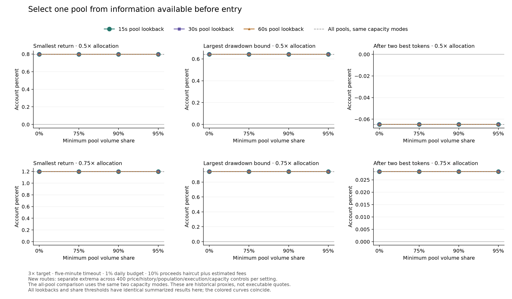
The audit independently decodes 17,491 raw records, checks 132 pre-entry pool selections covering 9 chosen pools, rebuilds 38,412 selected-pool seconds, checks 6,600 capacity/fee pairs, all 54,000 accounts and every earlier swap-price control.
These are repeatedly examined historical observations. Complete response pagination establishes the saved pages, not universal pool coverage. Recorded prices and volume participation remain proxies for execution; pool reserves and executable depth are unmeasured.
Selection declaration · Every pre-entry pool choice · Every comparison · Every ledger · Independent pool and account audit · Figure values.
The original all-pool comparison includes a third, quote-time-only capacity estimate. New pool routes require entry-time pool data, so that old mode is absent from their comparison. Attributing the difference in their headline minima to pool choice would be incorrect.
A matched comparison pairs all 48,000 new accounts with the same price, capacity mode, history, population, allocation, execution scenario, cost and removal definition. The table restricts both sides to entry-time capacity and its conservative combination with quote-time data. The positive margin is already present in this all-pool control; selecting a pool barely changes it.
| Matched comparison | Allocation | Smallest return | Largest DD bound | After two best tokens |
|---|---|---|---|---|
| All pools · same two capacity modes | 0.5× | +0.797014% | 0.641916% | -0.064853% |
| Chosen pool · same two capacity modes | 0.5× | +0.796994% | 0.641916% | -0.064872% |
| All pools · same two capacity modes | 0.75× | +1.197876% | 0.941446% | +0.028328% |
| Chosen pool · same two capacity modes | 0.75× | +1.197856% | 0.941446% | +0.028309% |
Matching definitions · All matched accounts · Matched minima and differences.
166,400 exhaustive removals cover 5,200 opportunity universes for every initially passing route/allocation, plus the half-allocation version of the route selected by the earlier risk ranking. Universes include potential entries skipped by the original account. This preserves the effect of freed cash, occupancy and daily budget.
| Pool rule | Allocation | Smallest return after any pair |
|---|---|---|
| 15s lookback · 0% minimum share | 0.5× | -0.0649% |
| 15s lookback · 0% minimum share | 0.75× | +0.0283% |
| 15s lookback · 75% minimum share | 0.75× | +0.0283% |
| 15s lookback · 90% minimum share | 0.75× | +0.0283% |
| 15s lookback · 95% minimum share | 0.75× | +0.0283% |
| 30s lookback · 0% minimum share | 0.75× | +0.0283% |
| 30s lookback · 75% minimum share | 0.75× | +0.0283% |
| 30s lookback · 90% minimum share | 0.75× | +0.0283% |
| 30s lookback · 95% minimum share | 0.75× | +0.0283% |
| 60s lookback · 0% minimum share | 0.75× | +0.0283% |
| 60s lookback · 75% minimum share | 0.75× | +0.0283% |
| 60s lookback · 90% minimum share | 0.75× | +0.0283% |
| 60s lookback · 95% minimum share | 0.75× | +0.0283% |
The audit checks each pair exactly once against a scalar opportunity universe. The tester computes 30,700 accounts and reuses 135,700 only when every account input and the entire normalized price-path digest agree. Matching base ledgers alone is insufficient for reuse.
Pair-study declaration · Complete opportunity universes · Every pair ledger · Pair minima and risk selections · Independent pair audit.
A separate diagnostic inspects all 10,800 original accounts at 10% proceeds cost. Their 91,800 repeated trade usages collapse to 9,260 distinct sale cases, with 130 independently checked exit-time volume estimates. The comparison uses the same participation fraction of economic volume over 60 seconds ending five seconds before each modeled sale. It does not reject historical entries using later information.
401 distinct sale cases exceed or lack this capacity proxy; 1,672 have a higher exit-time gas/MEV estimate than half the modeled round-trip fee. Among chosen-pool cases specifically, these counts are 161 and 656. These cases remain repeated scenarios on the same tokens, not independent observations. This diagnostic alone computes no adjusted return or actual fill.
Diagnostic definitions · Every distinct sale case · Capacity and fee findings.
The first sweep holds all 10,800 saved accounts at 10% sale cost, with their original entry roster and ticket sizes. One modeled sale recovers at most a multiple of the economic-volume participation limit measured five seconds before exit; unsold inventory receives zero. The higher-fee case uses the prior same-pool median gas plus MEV when it exceeds the saved exit-fee allowance. The table shows the 15-second/no-minimum-share pool route at three-quarter allocation across 400 price, history, population, entry-capacity and execution controls.
| Single-sale capacity | Smallest return | Losing accounts | Worst closed-equity DD |
|---|---|---|---|
| 0.25× proxy | -2.9045% | 207/400 | 2.9045% |
| 0.5× proxy | -1.5370% | 20/400 | 1.9364% |
| 1× proxy | +0.0141% | 0/400 | 0.9655% |
| 2× proxy | +0.6431% | 0/400 | 0.8102% |
| 5× proxy | +0.8528% | 0/400 | 0.6026% |
| Unlimited | +1.1914% | 0/400 | 0.3628% |
The second sweep permits later sales at 5-second intervals. Each order uses economic volume from a separate completed 5-second window ending five seconds before submission. It uses the next observed swap price within ten seconds, charges an additional fee per attempted order, and values remaining inventory at zero at the stated horizon. Nine extended Mobula requests add 905 later rows; all 13,859 overlapping rows match the original saved responses exactly.
| Allocation | Extra sale horizon | Smallest return | Losing accounts | Worst closed-equity DD | Extra order attempts |
|---|---|---|---|---|---|
| Half | 15s | +0.1322% | 0/400 | 0.7957% | 404 |
| Half | 30s | +0.2282% | 0/400 | 0.7146% | 720 |
| Half | 60s | +0.2352% | 0/400 | 0.7294% | 1,392 |
| Three-quarter | 15s | +0.3652% | 0/400 | 0.8048% | 452 |
| Three-quarter | 30s | +0.6050% | 0/400 | 0.7228% | 814 |
| Three-quarter | 60s | +0.6120% | 0/400 | 0.7375% | 1,498 |
Closed-equity drawdown excludes price movement while positions are open. Both sweeps hold entry admission and ticket size fixed; changed sale cash can change later admissions in a full replay. Recorded flow and prices do not establish actual swap depth, order success or live fees. The 400 accounts per row reuse eight or nine historical trades. This fixed-roster sweep does not recompute two-best-token and best-day exclusions.
Single-sale assumptions · Single-sale results · Single-sale accounts · Single-sale audit · Staged-sale assumptions · Staged-sale results · Staged-sale accounts · Independent staged-sale audit · Extended trade requests · Collection status.
Extended response files: call_602 · call_650 · call_665 · call_675 · call_735 · call_1064 · call_1077 · call_1389 · call_1437.
The full account replay uses all eleven historically eligible execution opportunities. It first reproduces every one of the 1,600 saved matched all-pool and chosen-pool accounts exactly. It then recalculates position size, daily budget, cash, overlap and later admissions after each staged liquidation. Entry reserves the maximum number of possible saved-fee half-orders using only its pre-entry fee estimate; the later observed fee is paid when selling. Excluding two best tokens or the best entry day triggers another complete account replay.
The two additional complete Mobula windows add 692 later trade rows. Their 3,632 original-window rows match the earlier saved data. The table covers the chosen-pool route across the same 400 price, history, population, entry-capacity and execution controls per allocation and horizon, at a 10% proceeds haircut plus the higher observed exit-fee estimate.
| Allocation | Extra sale horizon | Smallest return | Worst closed-equity DD | Without two best tokens | Without best entry day | Fewest trades |
|---|---|---|---|---|---|---|
| Half | 15s | -0.1370% | 0.7957% | -0.8494% | -0.4580% | 8 |
| Half | 30s | +0.0107% | 0.7146% | -0.7018% | -0.3104% | 8 |
| Half | 60s | +0.0080% | 0.7293% | -0.7046% | -0.3131% | 8 |
| Three-quarter | 15s | +0.0194% | 0.8047% | -0.8870% | -0.3738% | 8 |
| Three-quarter | 30s | +0.3103% | 0.7228% | -0.7394% | -0.1092% | 8 |
| Three-quarter | 60s | +0.3076% | 0.7375% | -0.7423% | -0.1275% | 8 |
The 30-second three-quarter case has the highest worst return and lowest worst closed-cash drawdown of its tested horizons: +0.3103% and 0.7228%. Its matched all-pool control has a +0.3104% worst return, so choosing one pool adds no measured improvement. Every one of the 24 tested route, allocation, horizon and fee combinations loses in at least one two-best-token removal and in at least one best-day removal. These comparisons still reuse eight or nine trades from previously examined dates.
The independent audit recalculates 81,600 sales from raw netted flow and later prints, then checks 9,600 cash ledgers and all summary extrema. Closed-equity drawdown omits intratrade price lows. The audit does not independently reconstruct every exclusion admission path. Observed prints and flow are not executable AMM quotes, so no live return or drawdown guarantee follows.
Full replay assumptions · Full replay results · Account ledgers and removals · Independent audit · Replay code · Audit code · Two added requests · Collection status.
Added response files: call_663 · call_1082.
This separate study keeps the earlier 3× one-second-high exit trigger and five-minute timeout. It changes the response to the saved volatility/cohort sizing factor, while preserving entry masks, reference histories, capacity, fees and the 1% daily full-loss budget.
For a valid positive factor f, the new factor is clip(1 + a × (f − 1), 0.1, 1.5).
The seven strengths a range from 0 to 1.5. Zero makes valid factors constant at one; actual order sizes still depend on capital,
capacity and the daily budget. One preserves the old arrays exactly. Larger values strengthen the original variation within the same
factor bounds. Missing and invalid factors never become eligible.
63,000 accounts cross all three price sources, both allocations and the previous flow/history/population/execution controls. The declaration at 2026-10-21T14:59:50.801660+00:00 precedes this sweep. Each row below gives separate extrema over 900 controls at a 10% proceeds haircut plus estimated fees. The initial screen requires at least eight trades and positive returns in the base account and both concentration removals.
| Strength a | Allocation | Smallest return | Largest DD bound | After two best tokens | After best entry day | Fewest trades | Initial screen |
|---|---|---|---|---|---|---|---|
| 0 | 0.5× | +0.926% | 1.366% | -0.4362% | +0.137% | 8 | Fail |
| 0 | 0.75× | +0.632% | 1.601% | -0.4532% | -0.139% | 8 | Fail |
| 0.25 | 0.5× | +1.089% | 1.161% | -0.4624% | +0.340% | 8 | Fail |
| 0.25 | 0.75× | +0.827% | 1.454% | -0.4449% | +0.048% | 8 | Fail |
| 0.5 | 0.5× | +1.138% | 0.936% | -0.3768% | +0.576% | 8 | Fail |
| 0.5 | 0.75× | +1.012% | 1.271% | -0.4364% | +0.234% | 8 | Fail |
| 0.75 | 0.5× | +0.938% | 0.738% | -0.2823% | +0.470% | 8 | Fail |
| 0.75 | 0.75× | +1.338% | 1.041% | -0.2593% | +0.653% | 8 | Fail |
| 1 | 0.5× | +0.732% | 0.642% | -0.1287% | +0.288% | 8 | Fail |
| 1 | 0.75× | +1.080% | 0.943% | -0.0739% | +0.502% | 8 | Fail |
| 1.25 | 0.5× | +0.256% | 0.528% | -0.1207% | -0.113% | 8 | Fail |
| 1.25 | 0.75× | +0.415% | 0.791% | -0.1445% | -0.050% | 8 | Fail |
| 1.5 | 0.5× | +0.306% | 0.426% | -0.0669% | -0.026% | 8 | Fail |
| 1.5 | 0.75× | +0.448% | 0.638% | -0.0468% | +0.038% | 8 | Fail |
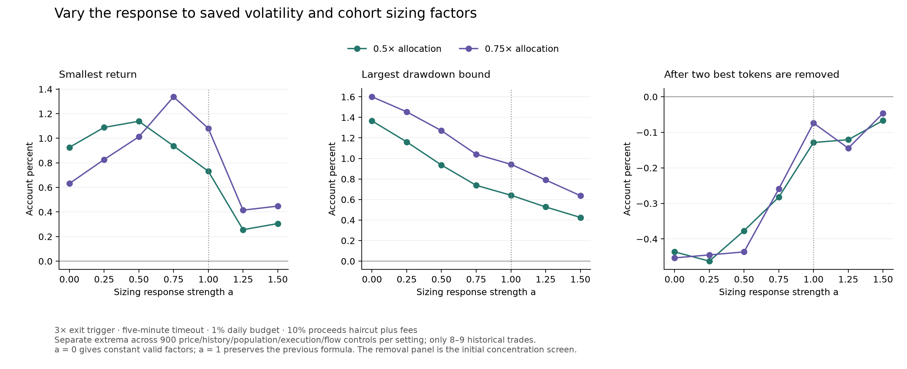
The audit independently reconstructs 94,878 factor values, checks every saved account, and reproduces all 9,000 previous accounts when strength equals one. Only eight or nine historical trades support these comparisons. The new receipt-time observations retain their earlier rules.
Sizing declaration · Every sizing comparison · Every ledger · Factor and account audit · Figure data.
168,000 additional accounts extend all 28 existing exit rules to ordinary and unfavorable swap prices. The 84,000 vendor-price controls remain bound to their earlier audit. This keeps both saved allocation levels, three volume/fee estimates, both reference histories, both original/expanded non-bot populations, 25 execution scenarios, 5%/10%/15% proceeds haircuts, and concentration removals at 10% cost.
The selection criteria were saved at 2026-10-21T14:52:21.326290+00:00, before this sweep. One rule and allocation must survive all three price sources, with at least eight trades and positive returns after the two best tokens or best entry day are removed. Five declared drawdown ceilings range from 0.5% to 2%. No setting qualifies at any ceiling.
| Price model considered separately | Passing rule/allocation combinations |
|---|---|
| Vendor candles | 26 / 56 |
| Recorded swaps | 12 / 56 |
| Unfavorable prints | 0 / 56 |
All 56 combinations have a negative two-best-token removal in at least one control. The closest margin is -0.0739%. That explicit losing pair already disproves an all-pairs-positive claim for each setting, so no additional exhaustive pair search is needed to reject this catalogue under the declared criterion. This result concerns the tested catalogue and stresses, not every possible strategy.
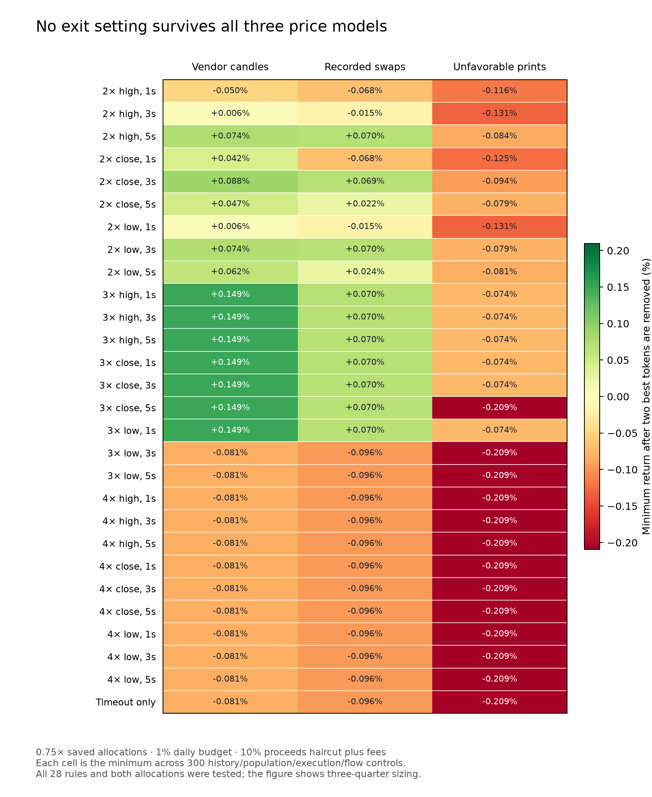
The account cache reused 112,628 exact input matches and computed 55,372 accounts, finishing in 305.6 seconds. Each source has a separate cache. This avoids 67.0% of duplicate account computations; it is not a claim of the same percentage reduction in wall-clock time. The independent audit checks all 168,000 records, 7,392 potential scalar sales, all 6,000 previous swap-price controls and every risk selection.
Selection declaration · Every comparison · Every ledger · Independent audit · Figure data.
160,200 additional historical account comparisons keep the three saved daily entry rules, both reference histories, both non-bot entry populations, half/three-quarter allocations and a 1% daily full-loss budget. These comparisons reuse the examined dates. The price study tests the earlier 3× rule even when its concentration screen fails; it does not select a replacement using the new results.
84,000 accounts test 2×/3×/4× targets using the high, close or low of 1, 3 or 5 consecutive observed seconds, plus a 300-second timeout. Missing seconds reset confirmation. A trigger is observed at the confirming second's close, followed by the declared 1/3/5-second reaction delay and the next observed market price within ten seconds. The model never assumes a fill at the target.
The declaration made before the sweep completed selects the greatest minimum return beneath each drawdown ceiling, subject to the sample and concentration requirements. It retains the original 3× one-second-high rule. A one-second-close trigger has the same aggregate extrema; longer confirmation does not improve the selected comparison. The table uses three-quarter allocations and separate extrema over 300 history/population/execution/flow controls at a 10% proceeds haircut plus estimated fees.
| Exit condition | Smallest return | Largest DD bound | After two best tokens | Initial screen |
|---|---|---|---|---|
| 3× high, 1 second | +1.364% | 0.943% | +0.1494% | Pass |
| 3× high, 3 seconds | +1.255% | 0.943% | +0.1494% | Pass |
| 3× close, 1 second | +1.364% | 0.943% | +0.1494% | Pass |
| 3× close, 3 seconds | +1.016% | 0.993% | +0.1494% | Pass |
| 3× low, 5 seconds | +0.984% | 1.158% | -0.0815% | Fail |
| 300-second timeout only | +0.984% | 1.158% | -0.0815% | Fail |
The 28,800 exhaustive pair replays retain both original allocation controls and the strict five-second-low diagnostic. The latter reaches -0.0815% after a pair removal. All 84,000 saved target accounts were checked, including 3,696 potential scalar sales and 3,000 earlier control ledgers.
Complete transaction pages cover all eleven potential entry opportunities, including those skipped by a full account. The independent audit decodes 17,491 raw rows and rebuilds 3,215 seconds from 17,087 valid target-token swaps. Every one of the 171 modeled price points has a swap in that second; 128 have a price within 1%, and 170 within 5%. The largest closest-price discrepancy is 5.85%.
9,000 replays compare the vendor candles, candles rebuilt from time-ordered swap prices, and an adverse stress that buys at the entry second's highest print and sells at the exit second's lowest print. The adverse case is a hindsight price bound within each fill second, not an order-placement rule. Entry features stay fixed to isolate the effect of execution prices. Earlier capacity and fee controls remain.
| Price model | Allocation | Smallest return | Largest DD bound | After any token pair | Fewest trades |
|---|---|---|---|---|---|
| Vendor candles | 0.5× | +0.972% | 0.630% | +0.0592% | 8 |
| Vendor candles | 0.75× | +1.364% | 0.943% | +0.1494% | 8 |
| Recorded swap candles | 0.5× | +0.919% | 0.629% | -0.0029% | 8 |
| Recorded swap candles | 0.75× | +1.362% | 0.941% | +0.0700% | 8 |
| Entry-second high / exit-second low | 0.5× | +0.732% | 0.642% | -0.1287% | 8 |
| Entry-second high / exit-second low | 0.75× | +1.080% | 0.862% | -0.0739% | 8 |
The recorded-swap model at three-quarter allocation retains +0.0700% after its worst pair removal. The adverse model fails that check at both allocations. Lower drawdown in one stress row is not a guarantee of lower future risk: changed entry prices also alter target timing and subsequent account decisions, and each column reports a separate scenario extremum.
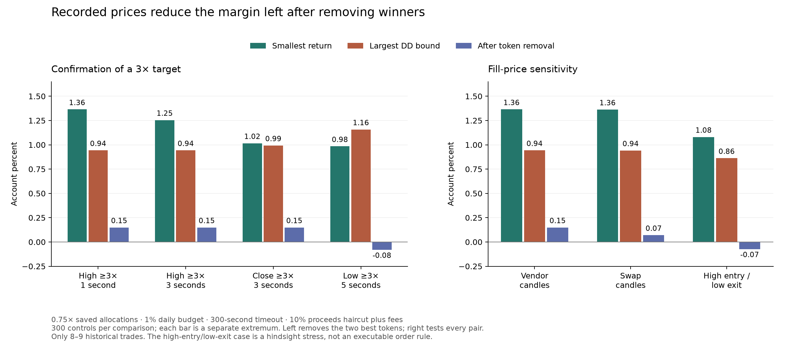
The second pair study checks all 38,400 removals across 1,200 complete opportunity universes, including all failed settings. Its audit compares every stored ledger and minimum. Price caches are separated by source. These swaps may come from different pools; an observed print does not establish an executable route for a new order of the modeled size.
All target comparisons · Target audit · Predeclared selection · Target pair audit · Every price-point comparison · All price comparisons · Independent swap-price audit · Every price pair ledger · Price pair audit · Figure data.
The new protocol was frozen at 2026-10-21T15:34:55.468+00:00, before capture readiness at 2026-10-21T15:35:22.530Z. It compares half/three-quarter non-bot allocations with first-observed and all-observed caller/contract populations, plus two unfiltered half-allocation controls. All six candidates keep the latest saved cap/dip/cohort entry, 3× target, five-minute timeout and 1% daily budget. The reference and flow experiments above do not change these frozen rules.
The context preserves all 1,194 previously audited calls, including repeated arrival calls and their observation deadlines. Unobserved gaps remain explicit. The full implementation was hashed before capture; every repeated call receives its own price-series request. Market retrieval waits until nine minutes after the 30-minute capture closes. Historical responses are used for a paper replay, not live execution.
29 captured signals produced 19 eligible quotes. 10 signals were excluded by the frozen quote/data rules.
| Candidate | Scenario | Haircut | Return | DD bound | Trades |
|---|---|---|---|---|---|
| non_bot_first_half | base | 5% | +0.000% | 0.000% | 0 |
| non_bot_first_half | base | 10% | +0.000% | 0.000% | 0 |
| non_bot_first_half | base | 15% | +0.000% | 0.000% | 0 |
| non_bot_all_half | base | 5% | +0.000% | 0.000% | 0 |
| non_bot_all_half | base | 10% | +0.000% | 0.000% | 0 |
| non_bot_all_half | base | 15% | +0.000% | 0.000% | 0 |
| non_bot_first_three_quarters | base | 5% | +0.000% | 0.000% | 0 |
| non_bot_first_three_quarters | base | 10% | +0.000% | 0.000% | 0 |
| non_bot_first_three_quarters | base | 15% | +0.000% | 0.000% | 0 |
| non_bot_all_three_quarters | base | 5% | +0.000% | 0.000% | 0 |
| non_bot_all_three_quarters | base | 10% | +0.000% | 0.000% | 0 |
| non_bot_all_three_quarters | base | 15% | +0.000% | 0.000% | 0 |
| control_first_half | base | 5% | +0.000% | 0.000% | 0 |
| control_first_half | base | 10% | +0.000% | 0.000% | 0 |
| control_first_half | base | 15% | +0.000% | 0.000% | 0 |
| control_all_half | base | 5% | +0.000% | 0.000% | 0 |
| control_all_half | base | 10% | +0.000% | 0.000% | 0 |
| control_all_half | base | 15% | +0.000% | 0.000% | 0 |
| non_bot_first_half | stress_0 | 10% | +0.000% | 0.000% | 0 |
| non_bot_all_half | stress_0 | 10% | +0.000% | 0.000% | 0 |
| non_bot_first_three_quarters | stress_0 | 10% | +0.000% | 0.000% | 0 |
| non_bot_all_three_quarters | stress_0 | 10% | +0.000% | 0.000% | 0 |
| control_first_half | stress_0 | 10% | +0.000% | 0.000% | 0 |
| control_all_half | stress_0 | 10% | +0.000% | 0.000% | 0 |
All observed outcomes · Independent arrival audit.
The receipt log preserved 126 original updates. The final history snapshot is limited to its last 100 messages; its reconciliation covers that page, not the entire stream.
Each window retains its own frozen protocol and context. The table counts eligible call observations and account trades across every cost/execution comparison; it does not count independent profitable trades or combine returns.
| Capture ready at | Eligible calls | Comparisons | Account trades | Evidence |
|---|---|---|---|---|
| 2026-10-21T13:59:09.926Z | 25 | 24 | 0 | Results · Audit |
| 2026-10-21T14:53:17.549Z | 22 | 24 | 0 | Results · Audit |
| 2026-10-21T15:35:22.530Z | 19 | 24 | 0 | Results · Audit |
Frozen source-filter protocol · Pinned validator · Capture protocol.
Two separate follow-ups retain the three saved daily entries, non-bot entry accounts, a 3× full-position target, a five-minute timeout, and a 1% daily full-loss budget. Half and three-quarter saved allocations remain fixed. The studies use previously examined dates; their apparent improvements are not combined into a newly optimized result.
The reference study crosses three account sources, five maximum reference ages and four matching rules: global, same chain, same cap bucket, or both. The cap edges are $6k, $10k, $25k, $50k, $100k, $250k and $1m. Reference age is measured from completion of the reference's three-minute outcome to the target's feature time. All references require recoverable text, exclude the target contract, and finish strictly before the feature is observed. Source selection chooses the first eligible call for a contract before examining its outcome.
30,000 accounts cover all 60 reference definitions, both call populations, two allocations, 25 execution scenarios, three cost haircuts, and concentration removals at 10% cost. Only the unrestricted global histories from all recoverable accounts or non-bot accounts pass the full screen at both allocations. The screen requires at least eight trades in every control and positive returns after removing the two best tokens or the best entry day. Same-chain references can have higher returns but fewer than eight trades. Freshness and cap matching do not pass this complete criterion.
The following extrema span both original/expanded entry populations and 25 execution scenarios at a 10% proceeds haircut plus fees. Non-bot references slightly improve the result. This changes the source of the market-condition estimate, separately from filtering the entry caller.
| Measurement | Allocation | Smallest return | Largest DD bound | After any token pair | Fewest trades |
|---|---|---|---|---|---|
| All recoverable references | 0.5× | +0.998% | 0.630% | +0.0849% | 8 |
| All recoverable references | 0.75× | +1.411% | 0.943% | +0.1881% | 8 |
| Non-bot references | 0.5× | +1.052% | 0.630% | +0.1390% | 8 |
| Non-bot references | 0.75× | +1.482% | 0.943% | +0.2692% | 8 |
Earlier accounts size against a 60-second volume and fee estimate measured near the original call. The delayed entry can make that estimate stale. New complete transaction windows cover all 11 potentially eligible opportunities, including calls the full account skips. 4,057 raw rows across 11 requests supply four entry-delay cases.
The entry-time estimate ends five seconds before the scheduled entry plus its declared delay. Capacity is still 0.5% or 1% of prior economic volume, with at least five swaps, and fees are twice prior median gas/MEV. The conservative comparison requires both estimates, uses their smaller capacity and charges their higher fee. Source message timestamps and price paths remain intact.
The 3,000 accounts cross both reference-history controls, both call populations, two allocations, 25 execution scenarios, 5%/10%/15% haircuts, and concentration removals at 10% cost. The table gives separate return and drawdown extrema across 100 controls per row at 10% cost. The higher pre-entry result is not a claim that this liquidity estimate measures executable AMM depth.
| Measurement | Allocation | Smallest return | Largest DD bound | After any token pair | Fewest trades |
|---|---|---|---|---|---|
| Call-time flow | 0.5× | +0.972% | 0.630% | +0.0592% | 8 |
| Call-time flow | 0.75× | +1.373% | 0.943% | +0.1494% | 8 |
| Pre-entry flow | 0.5× | +1.205% | 0.630% | +0.1184% | 8 |
| Pre-entry flow | 0.75× | +1.815% | 0.943% | +0.2506% | 8 |
| Smaller capacity / higher fee | 0.5× | +0.992% | 0.630% | +0.1013% | 8 |
| Smaller capacity / higher fee | 0.75× | +1.364% | 0.943% | +0.2124% | 8 |
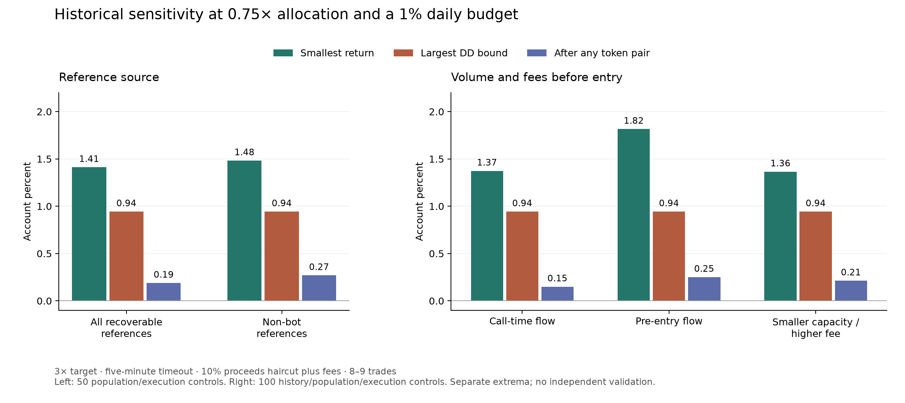
The follow-up pair study enumerates 16,000 token-pair removals across 500 complete universes. Every pair is checked, including contracts skipped in the base account. All reported pair margins remain positive. The reference audit reconstructs 3,795,120 feature values and all 30,000 accounts. The flow audit independently decodes raw trade legs, nets route quantities and reconstructs every capacity/fee input, then checks all 3,000 accounts. Together they reproduce 1,000 earlier control ledgers exactly.
Eight or nine historical trades and repeated searches on the same dates remain the main evidence limit. Drawdown bounds describe these modeled accounts; they are not future loss guarantees. Prospective source-filter observation is reported separately below.
Every reference comparison · Reference audit · Every flow comparison · Raw-flow audit · Every pair ledger · Pair audit · Figure data.
The new study applies four caller filters to the exact earlier daily entries: non-bot senders, bot senders, bot replies linked to verified requests from non-bot accounts, and non-bot senders plus those requested scans. The filter uses Telegram's bot-account flag; a non-bot account may still use automation. Request attribution uses the previously audited parent message, full address, timestamps and same-chat reply header.
All four original/expanded and all/recoverable-text populations remain, with both original and recoverable reference histories, 35 allocation/budget settings, 2×/3× targets, 25 execution scenarios and 5%/10% proceeds haircuts plus fees. This produces 224,000 portfolios, including 112,000 base comparisons and matching concentration replays.
There are 205 policy/history/population combinations passing every initial scenario and concentration check with at least eight trades, representing 65 distinct observed ledger sets. Non-bot portfolios pass with both all-text and recoverable-text entry populations. Their executed trades happen to have recovered text, so an explicit text-recovery entry filter is unnecessary for those ledgers. The reference-history controls still carry their stated historical data limitations.
Bot-only and requested-bot-only settings do not pass the full criterion. Some have positive unablated returns, so this is evidence of concentration sensitivity in this sample, rather than proof that every future bot call has negative expected value. Adding requested scans to non-bot posts passes some recoverable-text cases but fails the all-text controls.
The next comparison requires the same target and sizing policy to pass both reference histories and both original/expanded non-bot call sets. 21 settings satisfy that requirement. Eight declared drawdown ceilings, from 0.25% to 5%, select the largest minimum return below each ceiling; the preceding half-size/1%-budget comparison is also retained. None of these grid settings meets the 0.25% ceiling.
Six distinct settings are selected. All use a 3× full-position target, a five-minute timeout and no initial price stop. The table gives separate extrema across 100 history/population/execution combinations at a 10% proceeds haircut plus estimated fees. The allocation multiplier applies to the three different saved daily entry/sizing procedures described below.
| Allocation multiplier | Daily full-loss budget | Smallest return | Largest DD bound | Smallest return after any token pair |
|---|---|---|---|---|
| 0.25× | Saved daily budgets | +0.489% | 0.345% | +0.0164% |
| 0.5× | 1% | +0.972% | 0.630% | +0.0592% |
| 0.75× | 1% | +1.373% | 0.943% | +0.1494% |
| 1.5× | 1% | +1.655% | 1.033% | +0.0485% |
| 1.5× | 2% | +2.404% | 1.876% | +0.0767% |
| 2× | 2% | +2.863% | 2.057% | +0.0097% |
The 0.75× allocation with a 1% budget gives the highest minimum return among the settings whose modeled drawdown stays below 1%. At the larger allocations, some pair-removal margins are less than 0.01%. These are historical risk/return comparisons; the drawdown ceilings are not guarantees or live account stop rules.
Every possible pair is removed from each full eligible contract universe, including contracts the original account may skip. The 19,200 pair replays span 600 universes and remain positive throughout. Their independent audit reconstructs every universe, checks pair completeness, recalculates every account and verifies each stored minimum ledger.
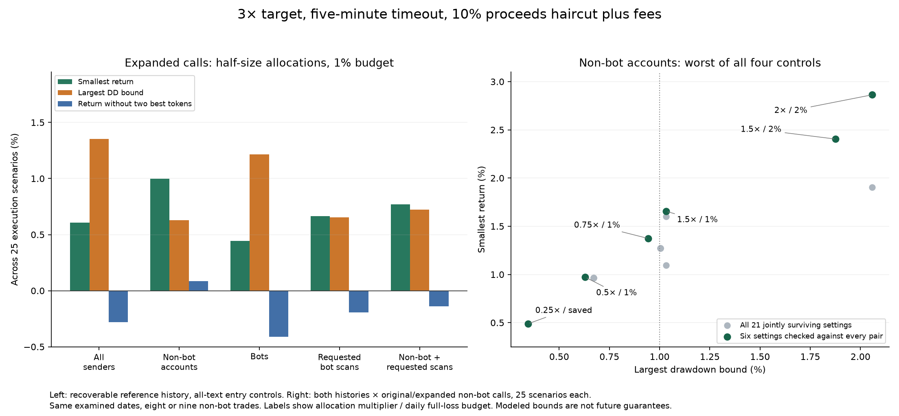
The source audit independently rebuilds 1,506 sender flags and 602 accepted request links. It checks all 224,000 ledgers, 1,476,782 executed-trade calculations and 19,688 complete admission replays. All planned observation windows are complete.
Clock bounds allow the tester to reuse 77,000 equivalent replays. Runtime falls from 89.2 to 71.4 seconds. All 112,000 metric rows and all 224,000 complete portfolio records exactly match the unpruned run. The bounds and every reused membership/factor class are checked separately.
These caller filters were investigated after examining the earlier results. Eight or nine trades, shared winners and repeated use of the same dates do not establish a durable edge or an optimum. The earlier observation window had zero trades and supplies no return evidence for this new caller filter.
All caller-category comparisons · Every saved ledger · Independent source audit and cache parity · Joint selection rules · Every token-pair replay · Independent pair audit · Figure data.
The trading protocol froze at 2026-10-21T13:07:25.426+00:00. The bounded capture then ran from 2026-10-21T13:07:40.157Z to 2026-10-21T13:17:40.163Z. It preserved 63 eligible originals, including 6 later edited messages. Extraction produced 22 token signals across 8 contracts; 0 first mentions appeared in later edits. Signal availability is the local receipt timestamp. Later edits never replace an earlier signal.
The unchanged entry requires quoted cap $50k–$250k, a 10–25% decline in the first complete clock minute, and a last-five mean of completed other-contract reference outcomes of at least −10%. Entry follows one additional minute. The full position exits at the next modeled fill after a 3× trigger or a five-minute timeout. No fixed price stop or trailing stop applies.
The primary candidate uses the first valid observed call for each caller/contract and a 2.5% base allocation weighted by volatility. Two controls admit repeated calls at 2.5% or 1.25%. Every candidate has a 1% daily full-loss budget, one open position and one purchase per contract. Historical volume participation and fee estimates still limit entries. These rules were not retuned after the window.
Documented acquisition correction. The reused collector fetched minute candles only for the first caller/contract call, omitting 5 repeated-call series. The initial 12-call replay is preserved. After identifying this implementation error, a separate replay adds every missing series, retaining all original quotes, existing series, the original market cutoff and the identical trading-protocol hash. This is a correction of the same observation, not another independent window. Correction and acquisition manifest.
Both historical quote and swap timestamps must precede receipt and be no more than 60 seconds old. There are 17 valid-quote calls and 5 excluded quotes, with 0 calls meeting the entry/cohort conditions. Of the valid calls, 7 pass the cap range, 1 pass the dip condition, and 0 pass both. There are 14 first observed caller/contract calls. All 1,130 fixed-context calls are preserved. The gap between context retrieval and capture readiness remains unobserved; first-call membership refers to this observed history. New completed-minute features are reconstructed from positive-volume second bars.
| Candidate | Execution scenario | Proceeds haircut | Return | DD bound | Trades |
|---|---|---|---|---|---|
| primary_first_half | Base | 5% | +0.000% | 0.000% | 0 |
| primary_first_half | Base | 10% | +0.000% | 0.000% | 0 |
| primary_first_half | Base | 15% | +0.000% | 0.000% | 0 |
| combined_half | Base | 5% | +0.000% | 0.000% | 0 |
| combined_half | Base | 10% | +0.000% | 0.000% | 0 |
| combined_half | Base | 15% | +0.000% | 0.000% | 0 |
| combined_quarter | Base | 5% | +0.000% | 0.000% | 0 |
| combined_quarter | Base | 10% | +0.000% | 0.000% | 0 |
| combined_quarter | Base | 15% | +0.000% | 0.000% | 0 |
| primary_first_half | 5s entry/reaction, half volume | 10% | +0.000% | 0.000% | 0 |
| combined_half | 5s entry/reaction, half volume | 10% | +0.000% | 0.000% | 0 |
| combined_quarter | 5s entry/reaction, half volume | 10% | +0.000% | 0.000% | 0 |
No frozen candidate traded. This window provides no return or drawdown evidence. Market data was retrieved after the price windows matured. This is a frozen-rule replay on prospectively observed message versions; it does not measure actual historical API delivery latency, executable AMM prices or transaction success.
The independent audit verifies all signal-version links and quote decisions, rebuilds minute features from raw second bars, checks scalar cohort histories, perturbs future values and independently recalculates every paper account.
Frozen trading protocol · Validator and declared pre-market revision · Observed signal identities · All calls, exclusions and ledgers · Per-call entry decisions · Independent arrival replay audit.
Seven multipliers on the saved daily allocations, from 0.125× to 2×, combine with five daily-budget settings. The study retains both 2× and 3× targets, both reference-history populations, original and expanded calls, and controls that include unavailable original text. It runs 56,000 portfolios in 40.8 seconds using cached prices and flow. There are 28,000 base portfolios and 28,000 token/day-removal replays. Every planned observation window is complete.
Nine policy/history combinations pass all 25 execution scenarios and both initial concentration checks at a 10% proceeds haircut plus fees. They represent 6 distinct observed ledger sets. All use a 3× target, a five-minute timeout, and nine original calls whose text was recovered. Before caller-category filtering, none of the settings using all original text states or expanded calls passes every check.
The table reports minima and maxima across scenarios, not one jointly observed account path. The allocation multiplier applies to the three different saved daily policies described below. The budget caps the amount that could be lost at purchase; it is not an intratrade price stop. All rows are retrospective comparisons on the same three dates.
| Reference history | Allocation multiplier | Daily budget | Minimum return | Maximum DD bound | Minimum after any token pair | Minimum without best day |
|---|---|---|---|---|---|---|
| Original | 0.75× | 1% | +1.291% | 0.922% | +0.055% | +0.510% |
| Original | 1× | 1% | +1.493% | 1.033% | +0.013% | +0.664% |
| Recoverable | 0.5× | Saved daily policy | +0.930% | 0.671% | +0.017% | +0.277% |
| Recoverable | 0.5× | None | +0.930% | 0.671% | +0.017% | +0.277% |
| Recoverable | 0.5× | 1% | +0.934% | 0.630% | +0.022% | +0.312% |
| Recoverable | 0.5× | 2% | +0.930% | 0.671% | +0.017% | +0.277% |
| Recoverable | 0.5× | 4% | +0.930% | 0.671% | +0.017% | +0.277% |
| Recoverable | 0.75× | 1% | +1.329% | 0.943% | +0.094% | +0.538% |
| Recoverable | 1× | 1% | +1.532% | 1.033% | +0.050% | +0.702% |
Removing the two highest recorded profits can miss budget-driven changes in later purchases. A second study therefore enumerates all 36 pairs from each nine-contract eligible universe in every scenario, including contracts that an account might skip. All 8,100 pair portfolios remain positive. The smallest margins are only a few hundredths of a percent.
One traded signal has unavailable original text: KIM from the scan bot. Including it changes some pass/fail results. These controls measure numerical sensitivity; they cannot establish that an edited-away address was available at the historical entry time. Text recovery is not a deployable rule for excluding future edits.
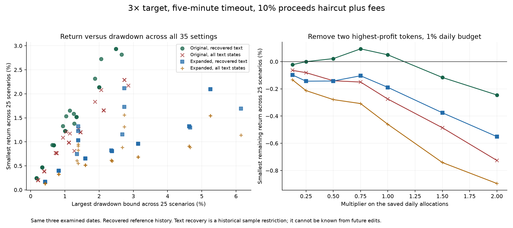
The audit checks every one of the 56,000 saved ledgers, including 528,959 trade calculations. Separate admission replays cover 1,771 portfolios. The exhaustive-pair audit independently replays all 8,100 accounts and rebuilds their eligible universes. A large number of correlated replays does not add independent trading observations.
All base comparisons · All saved ledgers · Sizing audit · Every token-pair removal · Independent pair audit · Figure data.
The earlier saved daily entries are transferred to the expanded call dataset without another entry search. Their exact cohort reference remains a three-minute minute-bar paper outcome with a 5% haircut. The original-history control reproduces all earlier entry masks, cohort gates and sizing factors, plus the full ten-minute control ledger at three costs. Two other history populations add newly eligible first calls and then restrict first calls to recoverable message text.
The saved daily entries differ: October 18 uses confirmed cap ≥$25k and at least two wins among the last five completed other-token references; October 19 uses quoted cap ≥$50k and the same gate; October 20 uses quoted cap $50k–$250k and a last-five mean ≥−10%. All require the first complete minute to close 10–25% below the quote, followed by another minute before entry. The first two days use 2% allocations weighted by ten prior reference outcomes; the last uses 5% weighted by observed volatility and a 4% daily full-loss budget. Liquidity limits, fees, one open position and one purchase per token still apply.
Six fixed timeouts from 15 to 300 seconds, six shortened versions of the saved trailing exits and four five-minute profit targets give 16 exits. There are 576 fixed comparisons and 576 winner/day-removal replays. No short-hold comparison lacks its planned price observation window. The table shows the 3× target with a five-minute timeout and no stop; sales occur after a trigger and reaction delay, at the next observed price, rather than being guaranteed at exactly 3×. The target was identified retrospectively from the catalog.
| Call population | Return, 5% cost | DD bound, 5% | Return, 10% | Without two best tokens, 10% | Without best day, 10% | Trades |
|---|---|---|---|---|---|---|
| Original calls with recoverable text | +2.98% | 1.21% | +2.33% | +0.50% | +0.87% | 9 |
| Added calls | +2.44% | 1.97% | +1.93% | -0.16% | -0.13% | 6 |
| Combined recoverable calls | +3.18% | 2.32% | +2.30% | +0.47% | +0.85% | 12 |
The highest-return combined comparison is the plain three-minute timeout at +3.21%, but it loses after removing its two best tokens. The 3× five-minute target retains more profit under those baseline concentration checks. These historical comparisons contain only nine or twelve trades on three dates, and original-text recovery restricts the sample.
Recoverable text is a historical data restriction, not a rule that can exclude future edits at entry time. The all-text original-call control is retained in the full tables. New arrival captures are needed to evaluate every observed original version without this restriction.
A further 600 execution portfolios compare added entry delay of 0/2/5/10 seconds, exit reaction of 1/3/5 seconds, half/full volume participation, and a $10k account case. All 25 scenarios remain positive at 10% cost for both 2× and 3× targets, under both reference history controls. Another 400 concentration replays expose the remaining weakness: for the 3× target with recoverable reference history, two-token removal remains positive in 20/25 original-call cases and 11/25 combined-call cases. Worst returns after a concentration removal are −0.17% and −0.72%, respectively. Before removal, the minimum scenario returns are +1.52% and +0.96%; the largest drawdown bounds are 1.34% and 3.14%.
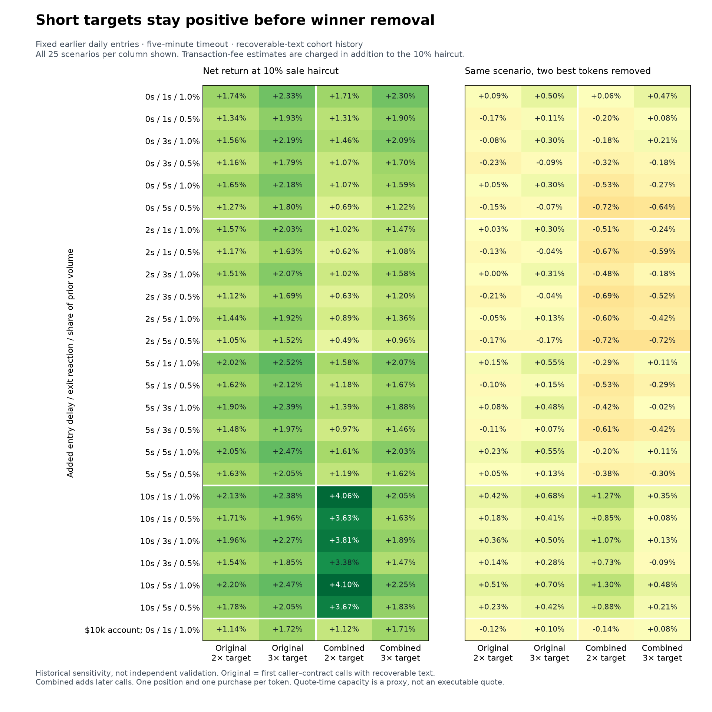
The feature audit independently rebuilds 1,506 minute references, 13,554 history selections and 54,216 feature values. Future perturbations preserve 293,328 earlier values. Separate debit-at-entry and settle-at-exit calculations check all 1,155 transfer portfolios and all 1,000 execution portfolios. Together they check 18,988 trade cash calculations and 554 scalar exit checks across the two studies. The execution baseline exactly preserves all 24 matching ledgers.
These results justify fresh paper observation. They do not establish an optimum or executable AMM returns: the selected exits reuse examined dates, and quote-time volume and fee estimates may be stale at entry.
Every fixed-entry comparison · All 576 rows · Independent feature audit · Execution scenarios and every ledger · Figure values.
A bounded read-only capture ran from 2026-10-21T15:35:22.530Z to 2026-10-21T16:05:22.535Z. It recorded 126 new-message updates, 7 edits and 0 deletion events from this group. It preserves 126 eligible observed originals, including 6 messages subsequently edited during the capture. Initial and final history snapshots are stored separately and are not treated as original text available at posting time.
Each event retains observed receipt time, posting/edit times, version hash and connection state. A chained hash audit checks all 338 frames and 333 message-version records. The final snapshot contains 100 messages posted during the window, of which 0 lacked a recorded new-message update. Its 100-message limit covers only the end of the window; it cannot reconcile the entire capture. This reconciliation cannot establish completeness for deleted messages or missed edits. No strategy was traded or paper-evaluated during the capture.
Telegram's update protocol includes sequence state and gap recovery; the local SDK handles that transport layer. The saved receipt log records what this collector actually observed.
Frozen capture protocol · Observed versions and availability · Capture audit.
This study compares 15/30/60-second windows after quote availability with the first full clock minute. Every price feature is rebuilt from observed positive-volume second candles. Entries wait 1/15/60 seconds after the window completes; all 32 exit rules hold for 15–300 seconds. No added call lacks the full requested observation horizon for these catalog settings. Missing entry observations and missing sale fills remain separate execution restrictions.
The same catalog is fitted to 791 original calls with recoverable text, all 406 added calls, and their 1,197-call combination. Cap bands run from below $3k/$6k/$10k through above $1m. Price filters compare several declines and increases, with activity, range or close-position checks. Gates use the last five or ten completed reference outcomes from distinct other contracts. Those references enter five seconds after the earliest recoverable quote and hold 60 or 180 seconds; their clipped returns include costs and estimated fees. An unavailable first outcome is not replaced with a later success, and the current contract is excluded from its own cohort.
12,150 entry rules × four observation windows × three waits × 32 exits give 4,665,600 catalog combinations. Canonical earlier-training masks reduce the work to 3,122,240 stored screen rows across four fits, with 48 membership caches. The heuristic shortlist receives 13,824 full portfolios in 63.28 seconds. Screening scores are not confidence bounds. The 36 sizing policies compare flat, observed volatility, active-second fraction and prior-cohort weights, with 1%/2.5%/5% allocations and no/2%/4% daily full-loss budgets.
| Daily selector | Return, 5% cost | Drawdown bound | Return, 10% cost | Trades |
|---|---|---|---|---|
| Original calls · 2% training ceiling | -2.76% | 4.40% | -3.92% | 24 |
| Original calls · 5% training ceiling | -7.20% | 17.22% | -11.39% | 26 |
| Original calls · strict training checks | -13.47% | 18.43% | -17.00% | 27 |
| Added calls · 2% training ceiling | -2.44% | 3.59% | -2.82% | 11 |
| Added calls · 5% training ceiling | -14.27% | 17.13% | -16.46% | 12 |
| Added calls · strict training checks | -20.27% | 23.42% | -22.70% | 15 |
| Combined calls · 2% training ceiling | -7.43% | 9.90% | -9.00% | 15 |
| Combined calls · 5% training ceiling | -15.98% | 19.73% | -18.64% | 15 |
| Combined calls · strict training checks | -16.03% | 20.11% | -20.14% | 17 |
Strict selectors require fourteen trades, ten contracts, three trading days and positive training returns after removing two best contracts and after removing the best entry day. They pass these checks in later fits and still lose during the following daily replay. The smallest observed loss is -2.44% with a 3.59% drawdown bound for the added-call 2% selector. The strict added-call selector loses 20.27% with a 23.42% drawdown bound. These names describe training constraints; evaluation drawdown can exceed them.
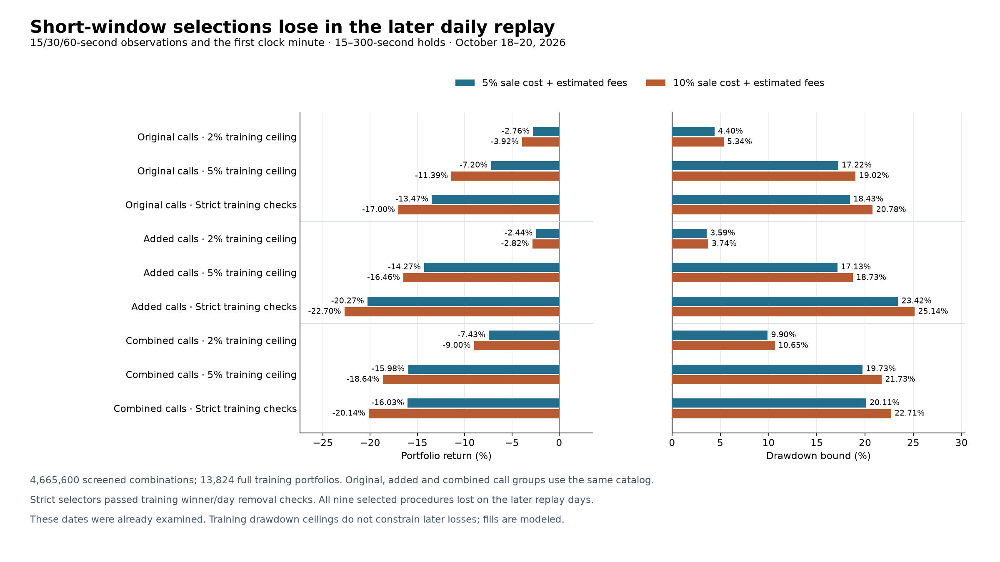
The raw-data audit checks all 6,024 completed windows and 30,120 price-feature values, 3,012 scalar reference returns, 12,048 distinct-token history selections and 48,192 cohort values. Mutating future prices, quote times and message availability preserves 121,056 earlier feature values. All catalog masks and 24,096 sizing factors are checked. The audit independently checks 448 screens including the entire shortlist, reconstructs all four shortlists from every saved score, replays 532 sampled training portfolios and all 90 saved portfolios, and checks 24 ordinary selection maxima. It verifies 1,823 scalar sales, 9,274 trade cash/drawdown calculations and all saved training exclusions.
Original and added calls use the same rebuilt price windows. Across 1,165 recoverable calls with both versions, no clock-minute close-return difference exceeds five percentage points relative to the saved minute series. The cohort references and timing grid are specific to this study; the earlier saved minute/cohort procedures remain separately reported. These dates were already examined. Original-text availability restricts the sample, and pre-quote fees and volume limits may be stale at a delayed entry. The fixed candidates and later collected observations are unchanged.
Short-window study · Results, stress cases and ledgers · Independent audit · Feature definitions · Compressed screening table · Figure values.
All 740 requested Telegram reply headers were retrieved. They corroborate 602 archived associations to a human parent containing the same full token address, with the parent's saved text available by the response. The headers confirm the sender, posting time, parent message ID and same-chat scope. 304 associations have recoverable original response text for this study, including 115 of the 232 added bot calls. This attributes a scanner request, not ownership of a token or wallet.
Only four earlier-quote fields change: count, previous index, time gap and price change for the same attributed requester. Unassigned bot replies retain bot identity. Actual human/bot filters, prices, entry times and execution inputs stay the same. The added repeated-call group changes from 277 to 265 calls: 25 become eligible and 37 cease to qualify. 331 recoverable calls have a different prior count. Equal-time quotes do not provide ordered history.
The experiment reuses the exact sender-based shortlist selected before each cutoff. It replays every candidate and policy under both identities, then applies identical training selection rules. 85,176 portfolios complete in 51.58 seconds; all 42,588 original training portfolios and 27 daily portfolios reproduce. Requester-specific rules outside that original shortlist are not searched.
| Daily selector | Sender return / DD, 5% cost | Requester return / DD, 5% cost | Requester return, 10% cost | Requester trades |
|---|---|---|---|---|
| Added calls · 2% training ceiling | -6.51% / 6.58% | -3.42% / 4.08% | -4.09% | 13 |
| Added calls · 5% training ceiling | -4.02% / 6.76% | -9.36% / 10.91% | -11.63% | 13 |
| Added calls · strict training checks | -3.63% / 6.51% | +0.00% / 0.00% | +0.00% | 0 |
The seven requester selections that trade all lose at 5%, 10% and 15% costs. Original-call and combined-call daily ledgers are unchanged. The strict added-call selection stays in cash on all evaluation days. All 18 checks that remove attribution after fitting requester choices reproduce their daily ledgers. The changed results therefore come from training selection, not changed admission under those chosen rules on the replay days. With original choices fixed, adding attribution changes the larger added-call return to -5.49% and the strict added-call return to -6.10% at 5% cost. Neither is profitable.
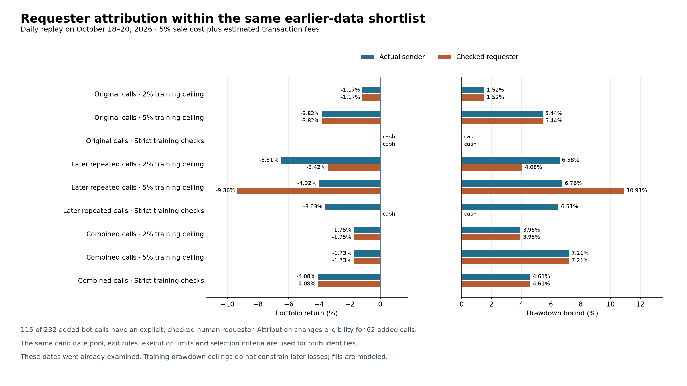
The independent audit checks 1,506 attribution decisions, 6,024 requester history values, 201,804 entry-mask values, 1,308 scalar sales and 10,815 trade cash/drawdown calculations. It covers 606 sampled training portfolios, 48 ordinary selection maxima, 3,029 stored token exclusions, 58 day exclusions and all 145 saved portfolios. Future quotes and identities preserve earlier history values. Completed data, search and figure commands reuse their saved artifacts without rewriting them.
These dates were already examined. Unavailable original message versions restrict coverage. Current Telegram metadata corroborates saved reply links; it is not a separately collected historical event stream. Field meanings follow the official Telegram reply-header documentation.
Paired attribution study · All costs and ledgers · Independent audit · Exact associations · Saved reply metadata · Figure values.
The original archive contains 618 later sender/contract calls omitted by its first-call compiler. 576 have usable historical quotes. Of those, 170 have later-edited messages whose original contents cannot be recovered. The separate dataset adds 406 calls, including 174 human and 232 bot calls, while preserving all 1,100 original calls. It contains 1,506 calls across 547 contracts. These are additional observations from already examined dates.
The search uses 1,197 calls with recoverable original messages. The added-call group also requires a strictly earlier quote from the same sender, leaving 277 calls. Features describe time since earlier quotes, price change since the first/latest/same-sender quote, earlier quote peaks and repeated-sender counts. Equal-time quotes do not supply one another with ordered history. Excluding unavailable message versions can bias the sample; it is a data restriction, not a live future-edit filter.
4,725 entry rules combine those features with cap bands from below $3k through above $1m, actual sender type and 5/15/30-second entry delays. There are 32 exits with 15–300-second holds, stops, 1.2×/1.5×/2×/3× targets and trailing exits. Seven purchase rules allow one, two or three trades per token, compare a two-minute cooldown, or allow another purchase only after a profitable or losing completed position. One global position remains. 453,600 entry/exit/delay combinations feed 42,588 full training portfolios in 33.51 seconds. The screen is a heuristic shortlist.
| Scope / training selector | Return, 5% cost | Drawdown bound | Return, 10% cost | Trades | Repeat purchases |
|---|---|---|---|---|---|
| Original calls · 2% training ceiling | -1.17% | 1.52% | -1.50% | 9 | 0 |
| Original calls · 5% training ceiling | -3.82% | 5.44% | -5.89% | 9 | 0 |
| Original calls · strict training checks | +0.00% | 0.00% | +0.00% | 0 | 0 |
| Later repeated calls · 2% training ceiling | -6.51% | 6.58% | -7.26% | 16 | 0 |
| Later repeated calls · 5% training ceiling | -4.02% | 6.76% | -6.56% | 13 | 0 |
| Later repeated calls · strict training checks | -3.63% | 6.51% | -6.49% | 17 | 0 |
| Combined calls · 2% training ceiling | -1.75% | 3.95% | -3.95% | 22 | 0 |
| Combined calls · 5% training ceiling | -1.73% | 7.21% | -6.14% | 20 | 0 |
| Combined calls · strict training checks | -4.08% | 4.61% | -5.18% | 12 | 0 |
The same quote-entry catalog is fitted separately to the original, added and combined call groups. The earlier minute-dip procedures are shown in the other sections. These new selectors require positive training returns at both costs and a training drawdown ceiling; the strict selectors additionally require enough trades/contracts/dates and positive returns without two best training contracts and without the best entry day. Token ranking aggregates every entered trade on that contract. The strict repeated-call and combined-call procedures pass those training checks and still lose later. Training drawdown ceilings do not constrain evaluation losses.
9,794 training policy rows contain repeat purchases at 10% cost. The selected daily portfolios make no repeat purchases: most choices allow one purchase, and the selected conditional repeat rule has no qualifying second entry. Forcing one purchase leaves all nine 10%-cost daily ledgers unchanged. This does not establish that repeat purchases are always unprofitable.
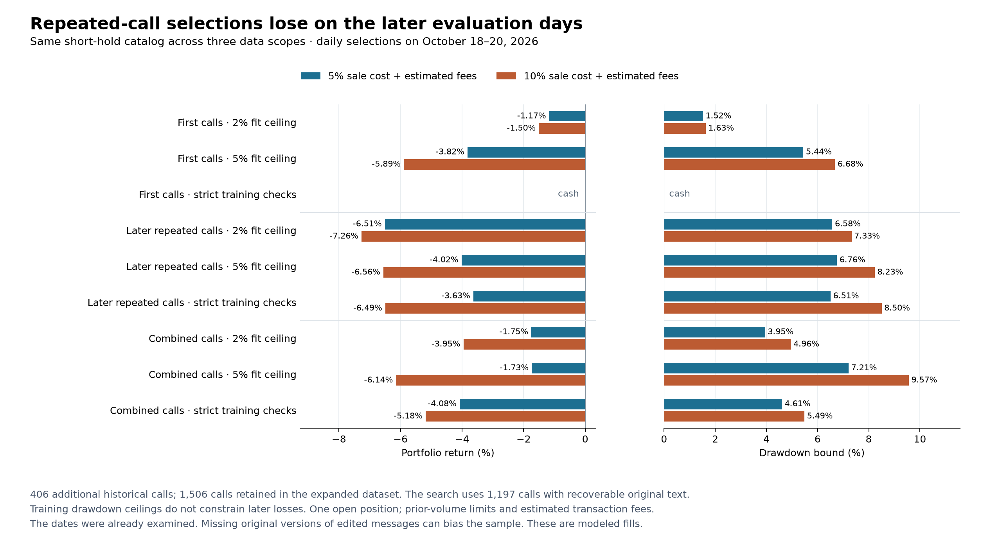
The dataset audit preserves 19 original numeric fields, 267,300 transaction-feature values and 9 original portfolios. It verifies 1,615 reused responses and 19,488 rebuilt minute slots. The strategy audit independently checks 19,578 quote-history values, 1,186 sale outcomes, 11,772 cash/drawdown calculations, 425 screens including the entire shortlist, and 77 saved portfolios. An independent account credits proceeds only at the exit event. Future quotes and outcomes leave earlier features and entry decisions unchanged.
Repeated-call study · Results and ledgers · Strategy audit · Dataset audit · Every excluded repeated call · Figure values.
The search preserves each saved day's entry/cohort filters, exits, sizing and daily budget. It compares waits of 1/5/15/30/45/60/90 seconds after the first minute is complete. The old procedure waits 60 seconds at that point. An additional 0/1/2/5/10 seconds tests delay sensitivity. These are hypothetical market-price fills, not measured execution latency.
594 earlier-data training portfolios cover 33 distinct waits including stress. Ordinary selection maximizes 10%-cost return under a training drawdown ceiling. Selection with the delay requirement maximizes the worst 10%-cost result across all five delays and requires every scenario to pass its sample/return/drawdown conditions. Each evaluation day's choice uses completed earlier outcomes only. The overall study reuses previously examined dates.
| Procedure | Original return / DD | Retimed return / DD | Trades | Worst added delay, 10% cost | Without two best tokens | Without best day |
|---|---|---|---|---|---|---|
| Earlier choices, retimed | +2.62% / 1.55% | +2.70% / 2.79% | 10 | +1.12% | -2.17% | -1.17% |
| Smaller partial sales, retimed | +2.08% / 0.77% | +2.56% / 1.12% | 10 | +0.66% | -0.53% | -0.02% |
| Smaller partial sales, delay requirement | +2.08% / 0.77% | +2.55% / 1.12% | 5 | +1.01% | -0.54% | -0.03% |
| Larger partial sales, retimed | +2.73% / 1.40% | +3.68% / 2.40% | 10 | +1.64% | -1.24% | -0.22% |
Return/DD and exclusions use 5% sale costs plus estimated fees, except the explicitly marked 10% column. Higher return comes with higher drawdown in these comparisons. The smaller delay-constrained procedure trades only five times. All trading selections lose under both concentration exclusions at 5% and 10% costs. These exclusions retain fitted choices and observed history while recomputing the portfolio. The stricter selector requires fourteen training trades; the three fits offer at most 11, 13 and 11, so it performs zero training winner/day removal checks.
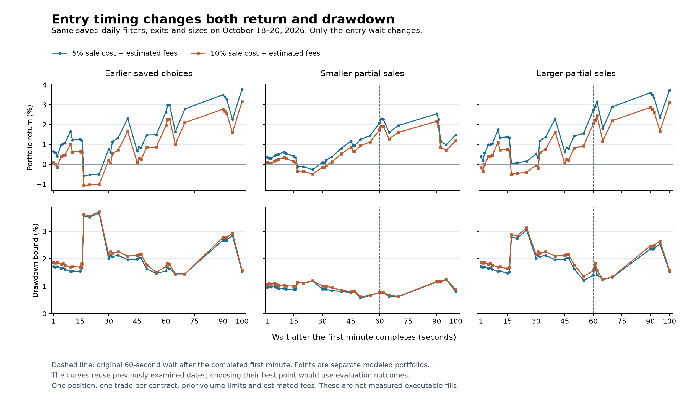
The audit reproduced 9 original portfolios, 594 training portfolios and 455 saved evaluation portfolios. It independently checked 36,300 entry fills, 2,194 sale outcomes, 10,183 trade cash/drawdown calculations and 45 choices. Altering all post-cutoff prices leaves all 594 earlier training portfolios unchanged.
Timing study · Every scenario and ledger · Independent audit · Figure values.
An overlap audit reproduces 72 original portfolios from 24 saved procedures at three costs, including cash selections. It checks 1,182 eligible outcome calls with both interval lookup and an independent scalar traversal. None of the twelve earlier leading procedures has an otherwise eligible, untraded contract while another position is open. Additional position slots therefore do not change those saved entries.
Two losing short-hold procedures each have one possible extra call at 5% cost, on the same token. No additions occur at 10% or 15% cost. These counts omit cash and daily-reserve checks, so they are upper bounds on extra trades. No concurrent return is inferred. Overlap evidence and per-call reasons.
The archive contains 2,141 exact contract-address mentions across message bodies and entity URLs, including 758 non-forwarded mentions from non-bot user accounts. Their authors are counted once per rolling window. A requester and a scanner replying to them therefore contribute only one human author.
Counts use every archived message, including messages without usable market quotes. They are fixed when the current quote became available, before the entry delay. The saved text of 615 edited mention events is available only at the later edit timestamp; earlier versions cannot be recovered. Same-time events also require an earlier or equal message ID. Human-account status and distinct authors do not prove independent information, endorsement, or wallet ownership.
| Earlier window | Calls with two senders | Two original human authors | Three original human authors | Two senders without two humans |
|---|---|---|---|---|
| 30 seconds | 233 | 4 | 0 | 229 |
| 60 seconds | 252 | 8 | 0 | 244 |
| 120 seconds | 277 | 13 | 0 | 264 |
| 300 seconds | 307 | 28 | 0 | 279 |
| 900 seconds | 329 | 43 | 2 | 286 |
The fixed catalog compares 7,392 rules, 32 exits and three entry delays: 709,632 entry/exit/delay combinations. Attention groups distinguish two or three human authors, two senders including bots, one human author, and no attention requirement. Cap boundaries include $3k, $6k, $10k, $25k, $50k, $100k, $250k and $1m. Price filters compare the current quote against the first or latest strictly earlier available quote of the same token. Both pullbacks and increases are included.
Entries wait 5, 15 or 30 seconds. Holds range from 15 seconds to five minutes, with 1.2×, 1.5×, 2× and 3× targets, 25–50% stops, and trailing exits. Allocations of 1%, 2.5% and 5% use flat, prior-volatility or mention-count sizing; daily budgets are 2%, 4% or absent. The $1,000 account, prior-volume limits, estimated fees and missing-fill writeoffs apply.
Equivalent masks are deduplicated only on completed training calls. Screening uses one earliest executable call per contract, a $20-or-volume-limit position, estimated fees and a 10% sale haircut. Returns are clipped to −100% through +100% for the screening score. At least twelve contracts are required. The score's standard-error penalty is a search heuristic, not a confidence interval. The ordinary screen retains at most sixteen entry/exit candidates per attention group. Including the human-only expansion below, the study runs 133,110 training portfolios across 66,555 policies, with twelve cached training-membership sets. The measured run took 64.72 seconds.
All 2,336 human-confirmation screens meeting the twelve-contract minimum have negative reference means at the 10% cost setting across the four fits. The follow-up removes the clipped-mean gate and both shortlist limits for human confirmation. It portfolio-tests all 2,336 distinct training combinations that have twelve contracts, under all 27 sizing/budget policies: 63,072 human policy fits at both cost settings. Every one has a negative portfolio return at 10% cost. The rejection therefore survives using uncapped portfolio PnL. All 27 non-human daily portfolios reproduce the ordinary-screen control exactly. Their selectors remain in cash; zero trades provide no positive return evidence. The last fit uses the full training dataset and does not add a fourth evaluation day.
| Daily selector | Return, 5% cost | Drawdown bound | Trades, 5% cost | Return, 10% cost | Trades, 10% cost |
|---|---|---|---|---|---|
| Two senders · 2% training ceiling | -5.40% | 5.59% | 17 | -6.31% | 17 |
| Two senders · 5% training ceiling | -8.61% | 8.69% | 17 | -10.20% | 17 |
| Two senders · training exclusions required | -1.60% | 2.07% | 5 | -1.69% | 5 |
| One human author · 2% training ceiling | -4.51% | 5.06% | 19 | -5.34% | 19 |
| One human author · 5% training ceiling | -10.97% | 11.94% | 39 | -12.12% | 37 |
| No attention requirement · 2% training ceiling | -3.44% | 4.48% | 19 | -4.67% | 19 |
| No attention requirement · 5% training ceiling | -8.27% | 10.25% | 36 | -10.09% | 34 |
The stricter sender selector requires profitable training replays after removing its two best tokens and its best entry day, plus fourteen trades, ten contracts and three active training days. It stays in cash for the first two evaluation dates, then trades five times and loses 1.60% at 5% cost. Passing those training checks does not establish future profitability. The 2% and 5% ceilings constrain training drawdown; the table shows that later drawdown can exceed them.
The audit independently reconstructs 2,141 raw mention events and 22,000 feature values, checks 77,040 values after deleting future messages and changing future quotes, and verifies 12 training-mask invariance cases. It checks 1,248 scalar price exits, 2582 earlier-data screens, 288 uncached training portfolios and 5,793 trade calculations. All 36 chronological ledgers and the four selected robust training exclusions pass. This remains retrospective research on repeatedly examined dates.
Full attention/exit comparison · Selections, ledgers, concentration and execution sensitivity · Complete candidate catalog · Exact mention provenance · Independent audit.
All 12 compared procedures lose when October 19 is excluded. This holds at both modeled cost settings, across partial sales, activity weights, Decider scores, uniform exposure controls, caller histories and account risk controls. Each procedure traded on only three UTC days. The rows share calls and dates and are not independent trials.
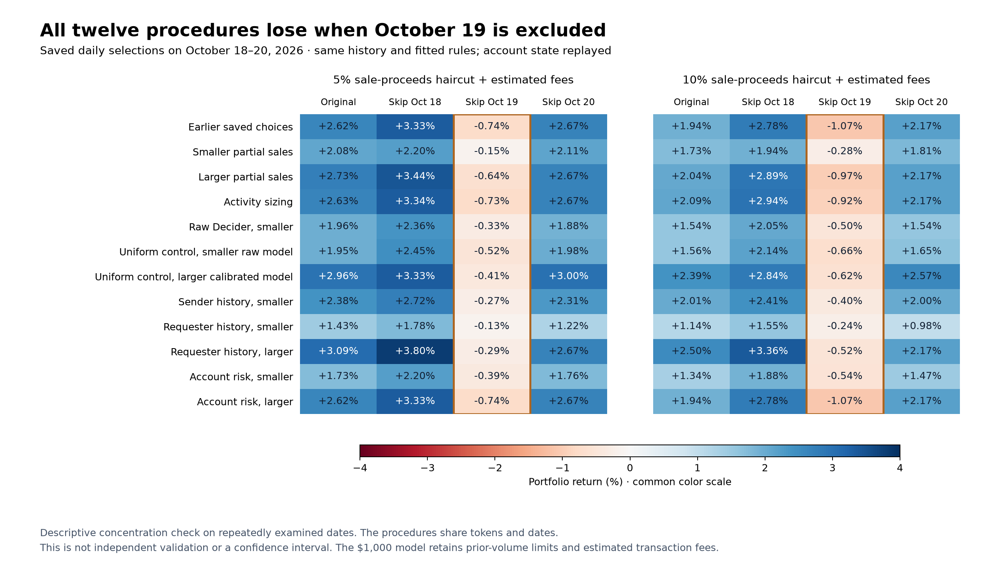
| Daily procedure | Original return, 5% cost | Drawdown bound | Without Oct 19, 5% cost | Without Oct 19, 10% cost | Original trades |
|---|---|---|---|---|---|
| Earlier saved choices | +2.62% | 1.55% | -0.74% | -1.07% | 10 |
| Smaller partial sales | +2.08% | 0.77% | -0.15% | -0.28% | 10 |
| Larger partial sales | +2.73% | 1.40% | -0.64% | -0.97% | 10 |
| Activity sizing | +2.63% | 1.32% | -0.73% | -0.92% | 10 |
| Raw Decider, smaller | +1.96% | 0.73% | -0.33% | -0.50% | 10 |
| Uniform control, smaller raw model | +1.95% | 0.83% | -0.52% | -0.66% | 10 |
| Uniform control, larger calibrated model | +2.96% | 1.33% | -0.41% | -0.62% | 10 |
| Sender history, smaller | +2.38% | 0.95% | -0.27% | -0.40% | 9 |
| Requester history, smaller | +1.43% | 0.64% | -0.13% | -0.24% | 8 |
| Requester history, larger | +3.09% | 1.32% | -0.29% | -0.52% | 9 |
| Account risk, smaller | +1.73% | 0.88% | -0.39% | -0.54% | 10 |
| Account risk, larger | +2.62% | 1.55% | -0.74% | -1.07% | 10 |
The adapter reproduced all 36 original portfolios at 5%, 10% and 15% costs before running 72 day exclusions. Exclusions replay the full eligible call stream, recomputing cash, overlap, contract eligibility, budgets and any active account controls. Later callers on an untraded contract remain eligible. Removing a day leaves the observed group history and previously fitted daily choices available.
This is a descriptive concentration check on repeatedly examined data. It is not a new chronological validation, a confidence interval, or a reason to trade only on the profitable calendar date.
A separate ledger audit checks 72 excluded-day ledgers, verifies that all earlier trade prefixes remain unchanged, and reconstructs 696 sale-ledger PnL calculations. It does not independently reprice the underlying candles.
All day exclusions · Exact ledgers, source hashes and daily contributions · Exclusion and ledger audit.
The new catalog compares 64 configurations: closed-equity drawdown scaling, daily drawdown scaling, daily loss stops, size reductions after profits, loss-streak scaling, loss pauses, spacing and gradual size recovery. Allocation uses only cash and outcomes of trades already completed before the next entry. Daily states reset at the next UTC entry day; the overall closed-equity high carries across days.
The comparison retains the earlier daily entry/cohort rules, budgets, four allocation scales and six exits per day. It considers 4,608 policies through 9,216 closed-trade plans. Caching identical entered sizes reduces candle accounting to 3,529 replays, with 5,687 cache hits. The measured study took 12.23 seconds.
| Procedure | Risk controls | Return, 5% cost | Drawdown bound | Return, 10% cost | Trades |
|---|---|---|---|---|---|
| Smaller positions | With selected controls | +1.73% | 0.88% | +1.34% | 10 |
| Smaller positions | Controls removed | +1.83% | 0.88% | +1.45% | 10 |
| Larger positions | With selected controls | +2.62% | 1.55% | +1.94% | 10 |
| Larger positions | Controls removed | +2.62% | 1.55% | +1.94% | 10 |
Removing the smaller procedure's controls preserves its chosen exits and sizes and improves return with essentially the same drawdown. The larger procedure reproduces the earlier original ledger. The controls therefore add no observed benefit here. Training drawdown ceilings are selection criteria, not guarantees on future losses.
The stricter selector requires fourteen training trades and ten contracts before checking returns without the two best tokens. The maximum available training trade counts are 11, 13, 11 across the three dates, so it selects cash throughout. Its 0 winner-removal checks reflect an unmet sample requirement; this is not evidence of a successful robust strategy. The trading procedures still lose without their two best tokens.
The audit reconstructed 228,652 risk weights from prior entered-trade history, checked 768 planning/accounting cases, 492 uncached training portfolios and 9,854 independent trade calculations. All 2,304 current/future-outcome mutations preserved earlier allocation decisions. All controller families activated on cached data; the unmodified planner reproduced the existing portfolio engine in 12 cases. Training CSV counts are recorded separately for each cost because costs can change pauses, budgets and later entries.
Risk-control comparison · Daily rules, ablations and execution sensitivity · All training policies · Independent causal and accounting audit.
The comparison uses sender identity and a separate requester attribution. Of 508 bot-authored eligible calls, 487 explicitly reply to a human message containing the same full contract address. Three possible matches were excluded because the parent was edited after the response; exact address boundaries also exclude substring matches. The call keeps its original timestamp, price, contract and sender metadata.
Requester attribution reduces 1,100 sender/contract history events to 614 requester/contract events. The original request and scanner response therefore do not get duplicate credit. Replies without sufficient evidence retain their actual sender, including the scanner bot.
History freezes before each UTC day. It excludes the token being scored, uses at most twenty earlier distinct contracts per caller, and shrinks caller means toward peer outcomes. Peer history uses the earliest group call per contract and excludes the current caller. Reference outcomes use 60 or 180 seconds after a five-second delay from the available quote, or 180 seconds after the existing confirmation wait. Prior volume and fee estimates apply. Returns are clipped to −100% through +100% before ranking; these scores are not uncapped expected-value estimates.
Variants use all preceding history or 24 hours, and all tokens or the same chain/cap band. Cap boundaries are $6k, $10k, $25k, $50k, $100k, $250k and $1m. Conditions cover shrunken means, performance relative to peers, win/loss frequencies and the mean after removing the best earlier outcome. At least 3, 5 or 10 caller tokens and twenty peer tokens are required. Failed conditions reject or halve the position; unknown callers are explicitly allowed or excluded.
The 2,305 modifiers, four sizes and six daily exit choices produced 165,960 policy rows. Caching identical stake vectors on completed training calls reduced this to 14,148 distinct portfolio replays. The measured run took 15.98 seconds. Every fit uses earlier outcomes, while the overall research still reuses dates already examined many times.
| Daily procedure | Return, 5% cost | Drawdown bound | Return, 10% cost | Without two best, 5% cost | Trades |
|---|---|---|---|---|---|
| Earlier saved choices | +2.62% | 1.55% | +1.94% | −1.02% (earlier check) | 10 |
| Sender history · smaller | +2.38% | 0.95% | +2.01% | -0.37% | 9 |
| Sender history · larger | +1.42% | 1.34% | +0.92% | -1.21% | 9 |
| Requester history · smaller | +1.43% | 0.64% | +1.14% | -0.34% | 8 |
| Requester history · larger | +3.09% | 1.32% | +2.50% | -0.56% | 9 |
The smaller requester procedure reduces both return and drawdown to +1.43% / 0.64%. Removing caller modifiers while retaining its selected exits and sizes gives +2.65% / 1.04%. These are risk tradeoffs on small samples. All caller variants lose without their two best tokens. Existing frozen candidates are unchanged.
The larger requester procedure omits one losing BNB Chain trade from the earlier ten-trade ledger. A post-hoc Solana-only control and a BNB-exclusion control reproduce its complete ledger exactly at 5%, 10% and 15% sale costs. The observed improvement therefore cannot distinguish caller skill from this single changed chain exposure. It does not establish that BNB Chain tokens or this caller are generally unprofitable.
Chain and sender controls · All ledgers and exact comparisons.
This snapshot is fixed at October 21, 00:00 UTC, using up to twenty earlier three-minute reference outcomes per identity. Only non-automated identities with at least ten observations are shown under anonymous labels. The mean is clipped and shrunk toward earlier peer outcomes; the excess is its difference from that peer mean. A positive excess can still have a negative mean. These figures describe modeled outcomes after calls, not members' own PnL or a proven profitable/unprofitable classification.
| Attributed requester | Prior tokens | Shrunken clipped mean | Excess over peers | Mean without best prior outcome |
|---|---|---|---|---|
| Caller 01 | 20 | -2.05% | +15.64 pp | -5.57% |
| Caller 02 | 15 | -4.53% | +11.70 pp | -8.15% |
| Caller 03 | 13 | -14.42% | +1.22 pp | -19.62% |
| Caller 04 | 10 | -14.61% | +1.01 pp | -19.04% |
| Caller 05 | 20 | -16.94% | -1.40 pp | -18.77% |
| Caller 06 | 11 | -16.97% | -1.47 pp | -20.89% |
| Caller 07 | 10 | -18.70% | -3.16 pp | -19.93% |
| Caller 08 | 20 | -18.97% | -3.85 pp | -21.61% |
| Caller 09 | 12 | -23.00% | -7.61 pp | -26.65% |
| Caller 10 | 20 | -23.88% | -8.81 pp | -27.59% |
| Caller 11 | 15 | -26.00% | -10.88 pp | -28.62% |
| Caller 12 | 20 | -27.73% | -11.53 pp | -32.13% |
| Caller 13 | 20 | -26.94% | -12.18 pp | -31.32% |
| Caller 14 | 12 | -28.64% | -13.74 pp | -32.29% |
The audit independently checked 1,100 attribution decisions, 17,520 history fields, 1,752 future/current-token label mutations, 219 reference returns, 168,265 modifier values, 502 uncached portfolios and 3,276 training-trade calculations. All 15 main chronological portfolios reproduced.
The research used perplexity/pplx-decider-v1.2-20261016 through the native Decisions API. The 1,066 saved requests produced six scores per call: 60/180-second profit, 180-second expected value, a 50% loss, a target-before-stop event, and expected value under a ten-minute trailing exit.
Inputs contain numeric first-minute price measurements, historical cap/age, earlier caller and cohort summaries, pre-call activity, and completed outcomes of other tokens previously bought by recurring recipients. They contain no token addresses, names, tickers, handles, caller IDs, raw messages or absolute dates. Chain identifiers are the only string values. Recipient outcomes describe what happened to earlier called tokens; they are not wallet profits or member identities.
Responses are cached. Reported API usage is 3,864,186 input tokens, 6,396 output tokens and $0.07728. Median latency was 547 ms and p95 was 656 ms; all 1,066 responses met the one-minute budget. The replay waits one minute after the first full candle. Measured request latency is not historical live bot latency.
All families retain the same three saved daily entry/cohort filters, budgets, four allocation scales and six exits per day. They can select unmodified sizing or cash. The comparison considered 29,160 training policies, requiring 20,244 distinct portfolio evaluations after caching equivalent completed-training stake vectors. The measured run took 20.42 seconds. All nine earlier activity/control ledgers reproduced exactly.
These are changing daily selections on dates already examined repeatedly. Each daily fit uses earlier completed outcomes, but this is still retrospective research. The account model remains $1,000, the position cap is 1% of prior economic volume, and prior transaction fees are added to the sale-proceeds haircut.
| Procedure | Return, 5% cost | Drawdown | Return, 10% cost | Drawdown, 10% cost | Without two best, 5% cost | Trades |
|---|---|---|---|---|---|---|
| Activity · smaller | +1.43% | 1.35% | +1.04% | 1.51% | -0.83% | 10 |
| Activity · larger | +2.63% | 1.32% | +2.09% | 1.49% | -1.00% | 10 |
| Raw Decider · smaller | +1.96% | 0.73% | +1.54% | 0.81% | -0.61% | 10 |
| Raw Decider · larger | +0.30% | 1.19% | -0.09% | 1.35% | -1.20% | 9 |
| Calibrated Decider · smaller | +1.46% | 0.96% | +1.02% | 1.11% | -1.11% | 10 |
| Calibrated Decider · larger | +2.62% | 1.33% | +1.99% | 1.49% | -1.01% | 10 |
Removing the smaller raw-model procedure's modifiers while retaining its selected exits and allocations gives +2.72% / 1.23% drawdown. Its lower drawdown therefore comes with less exposure and less profit. This ablation was examined after selection; it is not a newly validated strategy. The larger calibrated procedure's model modifiers have no effect on its entered ledger.
Calibration uses completed outcomes before the current UTC day, one earliest usable event per token, and excludes the token being scored. Fixed score bins shrink toward the earlier base rate; at least 30 earlier tokens are required. The diagnostic sample uses one evaluation event per token. Expected-value questions remain scores and are not treated as probabilities of a profitable trade.
| Question | Tokens | Observed rate | Raw AUC | Calibrated AUC | Raw Brier | Calibrated Brier | Prior-only Brier |
|---|---|---|---|---|---|---|---|
| Profitable after 60 seconds | 352 | 29.5% | 0.545 | 0.540 | 0.2114 | 0.2123 | 0.2128 |
| Profitable after 180 seconds | 352 | 30.4% | 0.533 | 0.457 | 0.2196 | 0.2146 | 0.2135 |
| Loss of at least 50% after 180 seconds | 352 | 23.0% | 0.559 | 0.516 | 0.1771 | 0.1779 | 0.1795 |
AUC measures ranking, with 0.5 representing chance; lower Brier error is better. Ranking is weak. Calibration reduces three-minute profit probability error, but does not beat the previous-day base-rate estimate. These diagnostics do not establish a trading edge.
The audit checked 1,066 anonymous inputs, 3,300 reference labels, 249 independent binary calibration cases, 249 future/same-token label mutations, 83 return-calibration cases, 342 uncached portfolios and 3,272 trade-accounting calculations.
Each exclusion removes entries from a caller and replays cash, overlap, daily budgets and later entries. Observed group history remains available. The 24 original portfolios at three cost levels reproduced exactly. Caller ranking uses observed contribution at the 5% cost setting.
| Procedure | Original return | Active callers | Without best caller | Without two best callers | Single-caller exclusions with same-token replacements |
|---|---|---|---|---|---|
| Earlier saved choices | +2.62% | 9 | +0.41% | +0.41% | 6/9 |
| Smaller partial-sale procedure | +2.08% | 9 | +0.43% | +0.43% | 6/9 |
| Larger partial-sale procedure | +2.73% | 9 | +0.51% | +0.51% | 6/9 |
| Activity sizing | +2.63% | 9 | +0.42% | +0.42% | 6/9 |
| Raw Decider · smaller | +1.96% | 9 | -0.25% | -0.25% | 6/9 |
| Raw Decider · larger | +0.30% | 8 | +0.30% | +0.30% | 6/8 |
| Calibrated Decider · smaller | +1.46% | 9 | -0.76% | -0.76% | 6/9 |
| Calibrated Decider · larger | +2.62% | 9 | +0.41% | +0.41% | 6/9 |
Every caller here contributes only one or two entered trades. In six exclusion scenarios per procedure, another sender's call replaces the removed sender on the same token. Similar returns after removing a caller therefore do not show independence from that winning token. The smaller raw-model procedure becomes negative without its best caller.
These are descriptive rankings. An exclusion chosen after observing its losses is not evidence of a profitable blacklist. The CSV includes caller labels, contribution, full-portfolio exclusion results and replacement counts.
Per-caller ranking · Caller report · All exclusion ledgers.
This control keeps each model procedure's saved daily entry/exit, allocation and budget. For each day it removes the per-call modifier and fits one uniform multiplier to the model's total entry capital on earlier completed training trades. It compares 201 multipliers from zero to one, using only absolute exposure difference; return is not the selection criterion. There were 2,424 training portfolios, and every chosen match is within 0.40% of its training target.
The uniform control still inherits the model-selected rules and earlier training exposure. It is an ablation of per-call scores, not an independently selected model-free strategy. Matching earlier exposure does not ensure equal future exposure. Entry capital below is total turnover in units per initial 100, not simultaneous risk.
| Source procedure | Evaluation sizing | Return, 5% cost | Drawdown | Return, 10% cost | Without two best, 5% cost | Entry capital |
|---|---|---|---|---|---|---|
| Raw Decider · smaller | Per-call scores | +1.96% | 0.73% | +1.54% | -0.61% | 5.85 |
| Raw Decider · smaller | Uniform reduction | +1.95% | 0.83% | +1.56% | -0.68% | 5.31 |
| Raw Decider · larger | Per-call scores | +0.30% | 1.19% | -0.09% | -1.20% | 7.08 |
| Raw Decider · larger | Uniform reduction | +2.66% | 1.27% | +2.07% | -0.85% | 8.42 |
| Calibrated Decider · smaller | Per-call scores | +1.46% | 0.96% | +1.02% | -1.11% | 6.73 |
| Calibrated Decider · smaller | Uniform reduction | +2.02% | 0.76% | +1.66% | -0.60% | 4.77 |
| Calibrated Decider · larger | Per-call scores | +2.62% | 1.33% | +1.99% | -1.01% | 9.44 |
| Calibrated Decider · larger | Uniform reduction | +2.96% | 1.33% | +2.39% | -0.68% | 7.79 |
The smaller raw model and its uniform control return about 1.96% and 1.95%, respectively. The model's drawdown bound is lower by about 0.10 percentage point, on ten trades. Uniform reductions improve both return and drawdown over the smaller calibrated procedure. The larger calibrated procedure's uniform control returns 2.96% with a 1.33% bound, but loses 0.68% without its two best tokens. These comparisons do not resolve concentration or establish an independent edge.
The check reproduced 12 saved training portfolios and 20 evaluation/ablation ledgers. It independently checked 277 training-trade calculations and 24 mutations of future factors.
All costs and exposure controls · Daily multipliers, ledgers and concentration checks · Every training exposure match.
The new search keeps the earlier saved daily entry/cohort gates. It compares 207 activity policies, four allocation scales and six exits per day. Inputs include 15-second versus 180-second volume rates, changes in buy share, within-transaction net flow, trading gaps, active seconds, recipient concentration and breadth, short price changes, and reference transaction-fee burden. A failing condition rejects the call or reduces its size to 25% or 50%.
Only trades timestamped before the call supply these inputs, with a five-second lag. The previous raw-trade audit remains in force. The net/gross flow ratio describes routed or offsetting transaction flow; it does not establish wash trading.
The search considered 14,904 training policies. Equivalent stake vectors on completed training calls shared results, leaving 13,476 distinct 5%/10%-cost portfolio evaluations. Each day's choice uses earlier completed outcomes. All these dates have already been examined repeatedly.
| Procedure | Return, 5% cost | Drawdown bound | Return, 10% cost | Without two best, 5% cost | Trades |
|---|---|---|---|---|---|
| Earlier saved choices | +2.62% | 1.55% | +1.94% | See earlier control | 10 |
| Activity sizing · 5% training limit | +2.63% | 1.32% | +2.09% | -1.00% | 10 |
| Activity sizing · 2% training limit | +1.43% | 1.35% | +1.04% | -0.83% | 10 |
| Winner-removal selector · only three trades | +3.37% | 1.07% | +3.02% | -0.28% | 3 |
The 5% selector retained the earlier full-position exits and reduced allocations when recent volume was weak. Its return increased by only 0.014 percentage points, while its drawdown bound fell by 0.233 points. Removing activity modifiers restores the exact original saved-choice result. The 2% selector underperformed: removing its activity modifiers while retaining its new exits/sizes produces +2.52%, versus +1.43% with them.
The three-trade winner-removal selector stayed in cash on two days. Its three entered trades and returns are identical with its activity filter removed. Its higher displayed return therefore does not demonstrate an activity-filter advantage; removing its two best evaluation tokens makes it lose. None of these selections replaces the frozen fixed rules.
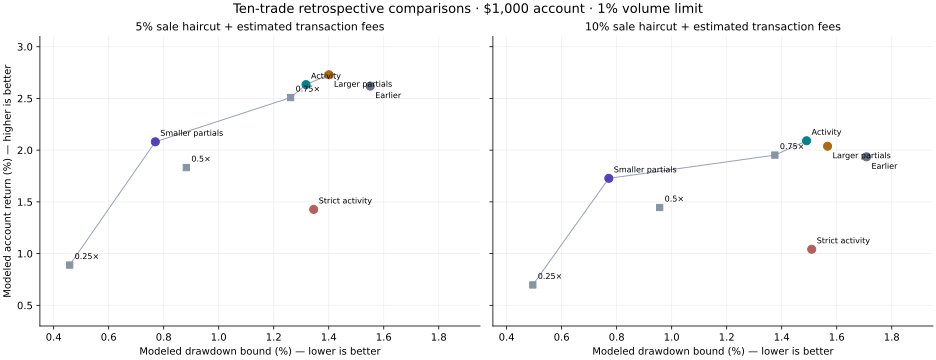
The plot compares procedures with ten trades over the same earlier evaluation days. Lines connect nondominated displayed results under each cost assumption. They are descriptive and do not estimate future performance.
The new audit independently checked 29,700 derived feature values, 62,100 sizing multipliers, 580 uncached training portfolios, 5,458 trade-accounting calculations and all 12 main chronological ledgers. Future-feature and future-cohort perturbations left earlier inputs unchanged.
This sensitivity check changes one parameter at a time around the three fixed candidates: cap boundaries, dip range, cohort threshold/count, hold length, trailing activation/gap, allocation, and partial-sale target/quantity where applicable. It evaluated 178 portfolios and 89 additional winner-removal portfolios on the same full training dataset. These are correlated in-sample perturbations, not independent trials.
| Fixed candidate | Neighbors | Profitable at 10% cost | Median return | Lowest return | Profitable without two best | Median without two best |
|---|---|---|---|---|---|---|
| Smaller positions, no partial sales | 26 | 100% | +4.96% | +0.42% | 1/26 | -0.70% |
| 25% partial sale at 1.2× | 30 | 100% | +9.76% | +0.00% | 1/30 | -2.90% |
| 75% partial sale at 3× | 30 | 100% | +4.36% | +0.47% | 10/30 | -0.22% |
Nearby variants remain profitable before removing winners, but that stability largely disappears after removing the two best tokens from each variant. The smaller-position candidate passes only one of 26 such checks. The comparator passes ten of 30. A profitable neighborhood therefore does not resolve the small-sample concentration problem.
Every parameter perturbation · Exact settings and signal sets.
The fixed fit retains the earlier $50k–$250k entry band, 10–25% first-minute dip, additional one-minute wait, and five-token cohort gate. It evaluated 7,254 portfolios using 403 distinct exits and 9 size/budget policies. The primary selector required a training drawdown bound within 2%, positive results at 5% and 10% costs, at least ten trades and eight contracts, then maximized the 10%-cost return. The secondary selector permits 5% training drawdown. The comparator also requires fourteen trades, ten tokens and a positive 10%-cost return after removing the two best training tokens.
These are full training fits on the original corrected 1,100-call dataset. They have fourteen trades, including dates used to fit the earlier daily procedures. Their returns cannot be compared directly with the ten-trade daily replays as evidence of improvement. The repeated search can overfit even the winner-removal check.
| Fixed candidate | Training return, 5% cost | Training drawdown | Training return, 10% cost | Without two best, 10% cost | Trades |
|---|---|---|---|---|---|
| Primary: lower drawdown | +6.10% | 1.53% | +5.22% | -0.62% | 14 |
| Secondary: higher training return | +13.07% | 4.58% | +10.22% | -2.66% | 14 |
| Comparator: positive without two best tokens | +6.39% | 3.04% | +4.95% | +0.28% | 14 |
| Earlier fixed rule | +17.07% | 6.00% | +13.63% | -1.79% | 14 |
Allocation is the base fraction below multiplied by clip(0.15 / max(0.01, first-minute range/open), 0.25, 1.5). Every candidate holds for at most ten minutes and activates a 30% trailing gap at 1.5×. The account model is $1,000, with positions capped at 1% of preceding 60-second economic volume. Prior swaps estimate gas/MEV fees; every possible partial-sale fee is reserved before entry.
| Candidate | Base equity fraction | Daily full-loss budget | Partial sales | Initial stop |
|---|---|---|---|---|
| Primary: lower drawdown | 1.25% | None | No partial sales | None |
| Secondary: higher training return | 5.00% | None | 25% at 1.2× trigger | 50% |
| Comparator: positive without two best tokens | 2.50% | 2% | 75% at 3× trigger | 50% |
| Earlier fixed rule | 5.00% | 4% | No partial sales | None |
Frozen at 2026-10-21T09:33:36.374286+00:00. The reserved window is 2026-10-21T08:50:50.285000Z through 2026-10-21T09:13:36.374286+00:00. The pull added 14 messages, but 0 were inside that window, producing 0 eligible calls and zero trades. All 1,122 earlier call records and their 19 numeric fields were preserved. That combined archive contains 14,340 messages and 1,124 eligible calls. No profitability conclusion follows from an empty window.
The execution collector now targets only new calls. An offline parity check passed 20 portfolios, 288 independent scalar outcomes, 280 trade-accounting checks and 5,832 fee/volume feature values. This checks the implementation, not future performance.
This window was frozen at 2026-10-21T10:04:54.838622+00:00 before retrieval. It runs from 2026-10-21T09:33:54.237000Z through 2026-10-21T09:44:54.838622+00:00. The pull added 19 messages; 0 lie inside the reserved window. There are 0 eligible validation calls and at most 0 trades per candidate/cost scenario. No eligible calls means no new evidence of profitability. All 1,124 older eligible calls and nineteen numeric fields were preserved. This combined archive contains 14,359 messages and 1,124 eligible calls.
Window results and preservation audit · Unchanged candidate definitions and new bounds.
This window was frozen at 2026-10-21T10:29:35.798976+00:00 before retrieval. It runs from 2026-10-21T10:05:02.180000Z through 2026-10-21T10:09:35.798976+00:00. The pull added 7 messages; 0 lie inside the reserved window. There are 0 eligible validation calls and at most 0 trades per candidate/cost scenario. No eligible calls means no new evidence of profitability. All 1,124 older eligible calls and nineteen numeric fields were preserved. This combined archive contains 14,366 messages and 1,124 eligible calls.
Window results and preservation audit · Unchanged candidate definitions and new bounds.
This window was frozen at 2026-10-21T10:54:57.349406+00:00 before retrieval. It runs from 2026-10-21T10:29:42.484000Z through 2026-10-21T10:34:57.349406+00:00. The pull added 20 messages; 0 lie inside the reserved window. There are 0 eligible validation calls and at most 0 trades per candidate/cost scenario. No eligible calls means no new evidence of profitability. All 1,124 older eligible calls and nineteen numeric fields were preserved. This combined archive contains 14,386 messages and 1,126 eligible calls.
Window results and preservation audit · Unchanged candidate definitions and new bounds.
This window was frozen at 2026-10-21T11:17:45.230714+00:00 before retrieval. It runs from 2026-10-21T10:55:03.051000Z through 2026-10-21T10:57:45.230714+00:00. The pull added 18 messages; 1 lie inside the reserved window. There are 0 eligible validation calls and at most 0 trades per candidate/cost scenario. No eligible calls means no new evidence of profitability. All 1,126 older eligible calls and nineteen numeric fields were preserved. This combined archive contains 14,404 messages and 1,126 eligible calls.
Window results and preservation audit · Unchanged candidate definitions and new bounds.
This window was frozen at 2026-10-21T11:44:19.791125+00:00 before retrieval. It runs from 2026-10-21T11:18:15.918000Z through 2026-10-21T11:24:19.791125+00:00. The pull added 16 messages; 1 lie inside the reserved window. There are 0 eligible validation calls and at most 0 trades per candidate/cost scenario. No eligible calls means no new evidence of profitability. All 1,126 older eligible calls and nineteen numeric fields were preserved. This combined archive contains 14,420 messages and 1,128 eligible calls.
Window results and preservation audit · Unchanged candidate definitions and new bounds.
This window was frozen at 2026-10-21T12:18:31.597730+00:00 before retrieval. It runs from 2026-10-21T11:44:24.543000Z through 2026-10-21T11:58:31.597730+00:00. The pull added 20 messages; 6 lie inside the reserved window. There are 2 eligible validation calls and at most 0 trades per candidate/cost scenario. No trades means no evidence of profitability. Newly collected historical prices remain a candle execution model; actual fills are unmeasured. All 1,128 older eligible calls and nineteen numeric fields were preserved. This combined archive contains 14,440 messages and 1,130 eligible calls.
Window results and preservation audit · Unchanged candidate definitions and new bounds.
A separate coverage check includes every archived eligible call posted after the original candidate freeze at 2026-10-21T09:33:36.374286+00:00, through 2026-10-21T11:58:31.597000Z. It includes 81 messages and 6 eligible calls on 3 contracts. Of those calls, 2 lie inside the separately reserved windows.
The unchanged minimum cap is $50,000; 4 calls fall below it. No call passes the unchanged entry/cohort conditions. The omitted collection gaps add no qualifying entries or profitability evidence. The coverage check was specified after collection, uses the original frozen rules, and does not retroactively turn the gaps into preregistered validation windows.
All calls after the original freeze · Interval gaps, fixed entry decisions and earlier-history references.
The new simulator sells fractions of the original token quantity, tracks the remaining inventory and realized cash, and charges an extra historical gas/MEV estimate for every partial attempt. Maximum possible fees are reserved before entry. Orders are serialized; each sale waits for a completed-candle trigger and the reaction delay, then uses the next observed open. A target is not a guaranteed fill price. Failed fractions are written off after ten seconds.
The broad catalog tested 282,100 combinations including full-exit controls. Its primary selector chose no partial sales and returned -2.63%. Keeping the earlier daily entry filters and choosing exits/sizes from each day's earlier data then evaluated 21,816 portfolios. Both new non-cash selections made two partial sales across ten trades.
Modeled account: $1,000, 1% of preceding 60-second economic volume per position, plus transaction fee estimates. The table uses a 5% proceeds haircut unless stated otherwise. Named risk limits constrain training, not future losses.
| Procedure | Return | Drawdown bound | Return at 10% haircut | Partial sales |
|---|---|---|---|---|
| Earlier saved choices | +2.62% | 1.55% | +1.94% | 0 |
| 5% training-risk selector | +2.73% | 1.40% | +2.04% | 2 |
| 2% training-risk selector | +2.08% | 0.77% | +1.73% | 2 |
Removing only partial sales, while retaining the selected exits and daily sizes, changes the 5% selector to +2.62% / 1.55% drawdown and the 2% selector to +1.99% / 0.86%. All comparisons enter the same calls. This isolates a small benefit from the partial sales. Controlled comparisons and ledgers.
The earlier daily entry filters remain in force. These dates use different exits and allocations; this is not one unchanged trading rule. Allocation percentages multiply the earlier sizing profile.
| Evaluation day UTC | Original allocation | Exit rule | Maximum hold |
|---|---|---|---|
| 2026-10-18 | 50% | Sell 25% at a 3x trigger; initial stop 50%; trail activates at 1.5x with a 30% gap | 600s |
| 2026-10-19 | 50% | Sell 25% at a 3x trigger; initial stop 50%; trail activates at 1.5x with a 30% gap | 600s |
| 2026-10-20 | 25% | Earlier saved full-position exit | 600s |
Removing the two best tokens gives -0.91% for the 5% selector and -0.29% for the 2% selector. The stricter sample-size requirement still leaves the procedure in cash. These are exploratory results on examined dates. The separately collected windows below evaluate the earlier frozen rule.
The independent audit checked 12,750 event sequences, 11,532 portfolio trades and 24,200 first decisions after changing later prices. With partials disabled, 44,000 outcomes and 16 portfolios agreed with the previous simulator. The optimized search now prepares 1 price path and 404 distinct outcome banks across the daily fits; results are unchanged. Accounting and execution audit · Full search, stress scenarios and source code.
Keeping each day's earlier saved entry filters, a second comparison evaluated 22,248 portfolios across 412 exits and 9 size/budget policies. Its 5% training-drawdown selector returned +1.97% with a 1.36% drawdown bound. Its 2% selector returned +0.78% with a 0.46% bound, using quarter-size allocations. No candidate met the stricter selector's sample-size requirements, so it stayed in cash.
Simply keeping the original saved exits and reducing allocation to one quarter returned +0.89% with a 0.46% drawdown bound. Those full-position exit variants did not improve that matched-size comparison. The original full-size ledger reproduced exactly.
The table below changes only the allocation multiplier of the original saved choices. The 7.5% maximum allocation, original daily budgets, 1% volume cap and historical gas/MEV estimates still apply. This is retrospective size sensitivity on the same ten trades, not an independently selected strategy.
| Original allocation | Return at 5% haircut | Drawdown bound | Return at 10% haircut | Return excluding two best tokens |
|---|---|---|---|---|
| 10% | +0.32% | 0.20% | +0.25% | -0.15% |
| 25% | +0.89% | 0.46% | +0.70% | -0.29% |
| 50% | +1.83% | 0.88% | +1.45% | -0.53% |
| 75% | +2.51% | 1.26% | +1.95% | -0.78% |
| 100% | +2.62% | 1.55% | +1.94% | -1.02% |
| 150% | +2.84% | 2.14% | +1.90% | -1.50% |
| 200% | +3.15% | 2.64% | +1.97% | -1.89% |
At 75% allocation, the replay keeps most of the full-size profit with a smaller drawdown bound. Every tested size still loses when the two best tokens are removed. Sizing results and ledgers · Exit comparison and daily training choices.
The next search tested 411 exit rules: stops that tighten over time, stalled-price exits, volatility-adjusted trails, falling volume and short-term price reversals. All decisions use completed one-second candles and fills wait for the next observed open after the reaction delay. Maximum holds range from five seconds to ten minutes.
Across 287,700 combinations and 4,224 portfolio evaluations, the primary daily selector returned -3.77% with a 4.56% drawdown bound. It did not improve the saved candidate. An independent scalar implementation checked 38,473 actual-data decisions and fills; 83,600 future-price perturbations left earlier decisions unchanged. Execution audit.
The new cache contains 487,906 trade rows from 595 complete request windows and 607 cursor pages, covering all 1,100 corrected calls. Features describe the preceding 15, 60 or 180 seconds with indexing lags of 1, 5 or 15 seconds. They include buy/sell balance, wallet concentration, routing-adjusted volume, activity bursts, price momentum, fees and pool withdrawals. Present-day wallet labels are excluded.
The search screened 236,800 entry/exit combinations in 0.43 seconds after loading and evaluated 6,144 portfolios. Its training selector required profit after removing the two best training tokens, but its later daily replay lost 8.41% with a 8.48% drawdown bound. Price losses explain nearly all of the loss. This search did not improve the earlier saved choices.
The following table replays those earlier saved daily choices, without refitting. A position cannot exceed 1% of the preceding 60-second economic volume. Economic volume nets routed target-token swaps within each transaction and recipient. The fee estimate is twice the prior median transaction gas plus MEV, in addition to the 5% proceeds haircut. At least five prior swaps are required. These are volume and fee proxies; historical pool reserves, executable size and transaction success remain unmeasured.
| Starting account | Return | Drawdown bound | Trades |
|---|---|---|---|
| $100 | +3.23% | 1.98% | 10 |
| $1,000 | +2.62% | 1.55% | 10 |
| $10,000 | +0.96% | 1.12% | 10 |
At $1,000, excluding the best two tokens changes the result to -1.02%. Full account-size, participation, cost and concentration results.
The audit independently checked 13,938 field values, 1,197 windows with changed future data and 425 portfolio trades. The API sometimes reports the requested token on the quote leg, so direction and amount must be normalized. One BSC receipt independently confirms that conversion. Feature and accounting audit · On-chain direction check · Mobula batch trade endpoint.
The cached trades contain 37,086 chain-scoped recipient addresses with at least $5 of net buying during a pre-call window. The context asks whether tokens associated with those addresses subsequently rose or fell after their first eligible group call. Its baselines wait five seconds, hold 60 or 180 seconds and apply a 10% proceeds haircut. This measures signal history, not wallet profits.
Each earlier token supplies one outcome. Only outcomes fully completed before the later call enter its context, and the target token's own outcomes are always excluded. Histories cover the prior day or all prior data, use at most 20 earlier tokens per address, and shrink scores toward zero. No address is linked to a Telegram member.
The search screened 156,160 combinations in 0.57 seconds, then evaluated 6,144 portfolios. Its primary daily replay returned -5.57% with a 5.57% drawdown bound across 38 trades. This is another rejected strategy family. The previous saved-choice benchmark reproduced exactly after sharing the search runner.
The history audit compared 17,955 values against a direct scan of prior token events and checked 1,197 windows after changing future and target-token outcomes. Both history implementations use the same aggregation formulas, so this specifically audits event selection and causality. Rules, sizing and stress results · History audit.
The corrected dataset has 1,100 eligible calls, 520 contracts and 45 callers. It adds 34 eligible calls. The collector had omitted direct EVM body addresses and used Robinhood testnet ID 46630 for mainnet tokens. The official mainnet ID is 4663. The repair preserved all original quotes and candles, recomputed caller-order and history features, and reused all 1,066 original second-bar windows. One address posted three times remains unresolved.
The saved choices add one losing BSC trade. A separate corrected search evaluated 67,200 combinations in 1.47 seconds after loading. Corrected ledgers, caller rankings, cap/chain baselines and sensitivity results. The older rows below retain their original dataset and are not directly interchangeable with corrected runs.
Starting equity is 100 units. Costs are applied once as a haircut to sale proceeds. Drawdown is a conservative bound from candle highs and lows. The following rows are retrospective daily selection procedures: their entry and sizing rules can change after each training day. These dates have already been examined.
| Procedure | Cost assumption | Portfolio return | Drawdown bound | Trades |
|---|---|---|---|---|
| Corrected data · saved choices · second candles | 5% | +3.77% | 1.69% | 10 |
| Corrected data · saved choices · second candles | 10% | +2.99% | 1.84% | 10 |
| Corrected data · saved choices · second candles | 15% | +2.21% | 1.99% | 10 |
| Corrected data · short holds and chain filters | 5% | -2.05% | 4.47% | 15 |
| Corrected data · short holds and chain filters | 10% | -3.71% | 5.24% | 15 |
| Corrected data · short holds and chain filters | 15% | -5.01% | 5.76% | 15 |
| Original data · cohort choices · minute candles | 5% | +4.28% | 1.61% | 9 |
| Original data · cohort choices · minute candles | 10% | +3.59% | 1.53% | 9 |
| Original data · cohort choices · minute candles | 15% | +2.91% | 1.59% | 9 |
| Original data · same choices · second candles | 5% | +4.22% | 1.40% | 9 |
| Original data · same choices · second candles | 10% | +3.54% | 1.47% | 9 |
| Original data · same choices · second candles | 15% | +2.86% | 1.64% | 9 |
| 5–180 second hold search · daily selection | 5% | -0.16% | 2.36% | 7 |
| 5–180 second hold search · daily selection | 10% | -1.32% | 2.23% | 7 |
| 5–180 second hold search · daily selection | 15% | -2.28% | 2.44% | 7 |
| Conditional entries and activity sizing | 5% | -7.04% | 11.94% | 22 |
| Conditional entries and activity sizing | 10% | -8.20% | 11.73% | 22 |
| Conditional entries and activity sizing | 15% | -9.09% | 11.44% | 22 |
| Reported liquidity and holder features | 5% | -7.28% | 7.51% | 9 |
| Reported liquidity and holder features | 10% | -7.78% | 7.99% | 9 |
| Reported liquidity and holder features | 15% | -8.26% | 8.43% | 9 |
| Pre-call trading flow | 5% | -8.41% | 8.48% | 15 |
| Pre-call trading flow | 10% | -8.53% | 8.53% | 15 |
| Pre-call trading flow | 15% | -8.64% | 8.64% | 13 |
| Recurring address context | 5% | -5.57% | 5.57% | 38 |
| Recurring address context | 10% | -5.62% | 5.62% | 34 |
| Recurring address context | 15% | -5.67% | 5.67% | 31 |
| Dynamic exits with quote-time filters | 5% | -3.77% | 4.56% | 19 |
| Dynamic exits with quote-time filters | 10% | -5.40% | 5.57% | 19 |
| Dynamic exits with quote-time filters | 15% | -6.58% | 6.75% | 19 |
| Saved entries with refitted exits | 5% | +1.97% | 1.36% | 10 |
| Saved entries with refitted exits | 10% | +1.32% | 1.52% | 10 |
| Saved entries with refitted exits | 15% | +0.68% | 1.69% | 10 |
| Partial-profit catalog with quote-time filters | 5% | -2.63% | 2.81% | 10 |
| Partial-profit catalog with quote-time filters | 10% | -3.29% | 3.47% | 10 |
| Partial-profit catalog with quote-time filters | 15% | -3.80% | 3.96% | 10 |
| Saved entries with partial-profit exits | 5% | +2.08% | 0.77% | 10 |
| Saved entries with partial-profit exits | 10% | +1.73% | 0.77% | 10 |
| Saved entries with partial-profit exits | 15% | +1.38% | 0.77% | 10 |
| Activity filters and size reductions | 5% | +2.63% | 1.32% | 10 |
| Activity filters and size reductions | 10% | +2.09% | 1.49% | 10 |
| Activity filters and size reductions | 15% | +1.55% | 1.66% | 10 |
Removing the best token from the minute replay leaves +0.91%; removing the best two gives −0.51%. The earlier Decider-assisted search did not improve the daily replay; see the model comparison below.
This earlier rule is one result of daily training selection. Its own fresh-window result is shown separately below; the saved-choice returns above are not the returns of this single unchanged rule.
The protocol was frozen at 2026-10-21T07:27:56.930679+00:00 before the new messages or prices were collected. The replay window starts at 2026-10-21T05:13:07.049000Z; the last new message is 2026-10-21T06:59:01.000Z. It contains 8 eligible calls and zero qualifying trades. This does not confirm profitability. It is a historical holdout collected after the freeze, not live trading.
A second protocol froze the same entry, exit and sizing fields before collecting the next window. Repaired EVM history and the first window supplied its earlier context. The extension starts at 2026-10-21T07:30:43.648000Z; its last message is 2026-10-21T07:50:22.000Z. It archived 21 messages and includes 3 eligible calls inside the reserved window, with 0 trades. That archive contains 14,312 messages and 1,116 eligible calls. Extension protocol, results and per-call decisions.
The rule froze before retrieval. This window runs from 2026-10-21T08:17:48.178000Z through 2026-10-21T08:30:00.000Z. It adds 14 archived messages, 4 eligible calls inside its reserved window and 0 trades. The combined archive contains 14,326 messages and 1,122 eligible calls. Protocol, results and per-call decisions.
The original archive has 14,273 messages and 1,066 eligible caller-contract calls from 44 senders. The additional archive has 18 messages. All original call metadata and 19 original numeric array fields were preserved. The separate validator reproduced the original nine-trade minute ledger.
The one-second cache has 600,201 observed seconds, including duplicate call windows, from 986 unique requests. Five calls have no usable second bars. Of 19,008 reconstructed minute bars, 18 differ by over 5%. Independent scalar replay agreed on 1,920 cases across 128 calls, five exit rules and three entry delays.
The shorter-hold search evaluated 49,920 combinations offline in 1.24 seconds after loading the data. Its full catalog, screening arrays, shortlist, selected ledgers and source code are saved. The replay loader now decompresses the entry masks once per run.
The search has tested millions of overlapping variants on a short history. Small samples, reused dates and token concentration prevent a claim of optimality. Missing second-resolution entry fills are skipped; an exit without an observed trade within ten seconds is written down to zero. These are simulation assumptions. Historical pool capacity, AMM price impact and transaction failures are not measured. The new transaction cache provides historical gas/MEV estimates; actual execution costs remain unknown.
Mobula's OHLCV reference documents second intervals and the behavior of empty candles. Caller tables describe outcomes following their messages; they do not establish members' own trading returns or ownership of wallets.